서울의 마지막 회수자 통합 제작 문서
v0.1 · 2026년 9월 7일 · 프리프로덕션 설계
서울의 마지막 회수자 제작 패키지
버전 0.1 · 작성일 2026년 9월 7일 · 프리프로덕션 설계 기준
이 패키지는 현대 서울 배경의 2.5D 쿼터뷰 액션 RPG를 개발하기 위한 최초 제작 기준이다. 캐릭터와 환경은 3D이며 이동과 전투 판정은 주로 XZ 지면에서 이루어진다. Windows PC 싱글플레이 유료 게임을 전제로 한다. 게임 실행 파일과 엔진 프로젝트는 이번 산출물에 포함하지 않는다.
읽는 순서
01 Pitch, 02 GDD, 03 전투, 04 성장, 05 인벤토리와 경제, 06 레벨, 07 세계관과 전체 시나리오, 08 대사, 09 UIUX 순서로 읽는다. 10부터 13은 캐릭터와 아트, 14부터 16은 기술, 17은 사운드, 18부터 20은 제작 관리, 21부터 26은 QA와 출시 운영 문서다. 27은 근거 자료와 결정 기록, 28은 요청 항목별 산출물 연결표다.
무엇이 확정됐는가
이 문서 안에서의 설계 결정은 PC 싱글플레이, 고정 쿼터뷰, 거점과 임무 구조, 본편 6챕터 18개 주 임무, 원작 완결까지의 각색, 주인공 1명 직접 조작, 능동 도식 3슬롯과 권역 1슬롯이다. 이는 사용자 검토와 플레이테스트를 위한 제안 기준이며 실제 제작 승인이나 출시 약속을 의미하지 않는다.
첫 제작 대상 VS는 M001 물류센터 임무 20분이다. 본편은 주 임무당 목표 2030분, 거점 대화와 전환을 포함해 약 810시간을 목표로 한다. 선택 계약과 재도전은 추가 24시간이다. 기존 대화의 원작 16부만 첫 작품으로 만드는 방안 대신, 이번에는 사용자가 요청한 완결 시나리오를 충족하도록 원작 12부를 6챕터로 압축했다.
산출물의 상태
문서와 수치 데이터는 작성된 설계안이다. 밸런스 수치는 가설이며 측정값이 아니다. 캐릭터 보드와 환경 이미지는 AI 생성 콘셉트이고 FBX 모델이나 실제 게임 캡처가 아니다. 정면과 측면의 디테일 차이는 모델러가 텍스트 사양으로 정리해야 한다. 3D 모델, 리그, 애니메이션, 음원, 보이스와 실제 트레일러는 제작 목록과 사양을 제공한다.
플레이테스트 보고서는 미실시 상태의 운영 양식이다. 테스트 결과를 임의로 채우지 않았다. 등급분류는 목표만 제안하며 실제 등급은 미확정이다. 개인정보처리방침과 이용약관은 사업자명과 문의처가 미정인 검토용 초안으로 게시할 수 없다.
수정 원칙
문서의 규칙은 GDD, 수치의 기준은 balance.xlsx, 구현 반입 형식은 data의 JSON Schema로 관리한다. 수치 변경 시 엑셀 수정, 내보낸 JSON 갱신, 데이터 검증, 문서 버전 기록 순서로 진행한다. 현재 JSON과 CSV는 v0.1 스냅샷이다. 엑셀을 수정했다고 자동으로 JSON이 바뀌지 않는다.
ID는 M001 임무, LV001 레벨, SK001 도식, EN001 일반 적, BS001 보스, TK01 캐릭터, PR001 프롭, QA001 테스트, BL001 작업 형식이다. ID를 삭제 후 재사용하지 않는다.
서울의 마지막 회수자 게임 컨셉
회수 노동자 윤태경이 적의 공격이 남긴 잔향을 모아 능력을 재조립하고, 무너지는 서울에서 사람을 구하는 액션 RPG다. 익숙한 도시가 비정상적으로 작동하는 장면과 눈에 보이는 능력 성장이 핵심이다.
제품 방향
장르는 스토리 중심 싱글플레이 액션 RPG다. 3D 캐릭터와 배경을 고정 쿼터뷰로 보여 주며, Windows PC와 키보드 마우스 및 게임패드를 우선 지원한다. 성인 액션 RPG 이용자와 현대 판타지 독자를 주요 대상으로 삼는다. 표현 목표는 15세 수준이지만 국내 실제 등급은 심사 전 미정이다.
핵심 재미
적의 공격 예고를 읽고 회피하거나 방벽을 깨뜨린다. 드러난 잔향을 회수해 즉시 쓸 에너지를 얻는다. 도식을 연구하면 구조용 견인선이 기동과 군중 제어 기술로 발전한다. 전투에서 익힌 능력은 기둥 지지, 대피로 개방, 앵커 안정화에도 사용된다. 전투와 구조가 같은 조작 체계를 공유한다.
첫 20분
구로 물류센터에 들어간 태경은 잔향의 역류를 발견한다. 플레이어는 적의 공격을 피하고 파편을 모으며, 견인선으로 장애물을 옮기고 잔금막으로 통로를 지탱한다. 마지막에는 앵커에 융합된 지게차형 변질체의 돌진을 유도해 노출된 연결부를 해체한다. 일곱 명이 귀환하면 첫 도식 연구가 열린다.
차별점
전리품의 숫자보다 힘의 사용 방법이 늘어나는 성장을 제공한다. 회수한 에너지는 적에게 반납할 수도, 무너지는 통로를 지탱하는 데 쓸 수도 있다. 모든 주민을 느리게 호위하지 않고 안전 경로를 확보하면 구조대가 이동을 담당한다. 한국 도시의 셔터, 개찰구, 배전함과 적재 선반은 전술적 지형이 된다.
시각과 사운드
젖은 콘크리트와 작업복의 회색 및 남색에 안전띠 주황을 배치한다. 태경의 힘은 청백색 선과 각진 파편으로 표현한다. 적의 경고는 주황색 면과 명확한 방향 표식으로 분리한다. 초능력의 소리는 금속 결합, 전기 공진, 유리층의 진동에서 출발한다.
범위와 사업 가정
본편 6챕터 18개 주 임무, 6환경 키트, 일반 적 원형 8종, 보스 6종, 주인공 1명과 주요 비조작 인물 7명을 계획한다. 필수 전투 도식은 8종이며 변형 노드로 빌드를 확장한다. 온라인 협동, PvP, 오픈월드, 계정 서버, 확률형 유료 상품은 출시 범위에 없다. 일회성 유료 구매와 선택적 사운드트랙 판매를 제안한다. 가격은 시장 검증 전 가정이다.
제작 판단
핵심 3인과 전문 외주를 기준으로 12주 체험판을 검증한 뒤 본편 제작을 결정한다. 전체 18개월 계획은 이 검증을 포함한다. 체험판에서 초회 플레이어가 잔향 회수의 이유를 이해하고, 보스 공격 예고를 읽으며, 구조를 부가 노동이 아닌 능력 사용으로 받아들이는지 확인한다.
참고 방향
Control은 초능력과 반응하는 현대 공간의 관계를 참고한다. Unity 공식 URP와 Shader Graph 자료는 고정 시점의 3D 표현과 재질 이펙트 제작 검토에 사용한다. 특정 게임의 캐릭터, UI, 맵 또는 에셋을 복제하지 않는다. 출처는 27 문서에 수록한다.
서울의 마지막 회수자 전체 게임 설계
이 문서는 서로 충돌하는 하위 문서의 판단 기준이다. 게임은 관측과 회수로 강해지고, 전투 능력으로 구조 문제를 해결하는 거점형 액션 RPG다.
플레이의 세 가지 기준
모든 전투에는 회수할 이유가 있어야 한다. 최소 한 공격 또는 적이 식별 가능한 잔향을 남긴다. 구조 문제는 전투에 사용한 견인과 방어 조작으로 풀 수 있어야 한다. 영구 성장 후 이전 구역의 적은 실제로 쉬워져야 하며 적의 자동 레벨 보정은 사용하지 않는다.
카메라와 공간
기준 해상도 1920×1080, 직교 카메라 yaw 45도 pitch 35도, 기본 Orthographic Size 9를 초기값으로 둔다. 16대9 화면의 가로 가시폭은 약 32m지만 지면 깊이는 카메라 각도에 영향을 받는다. 보스전은 Size 11까지 0.5초 이상에 걸쳐 확대한다. 자유 회전과 수동 점프는 없다. 계단과 경사로의 높이는 표시와 경로 계산에 반영하며 공격은 같은 navFloorId에서만 맞는다. 상하층 공격은 별도 표식으로 지정한 패턴에 한정한다.
반복 구조
거점에서 임무와 도식 3개를 선택한다. 현장에서는 탐색, 전투, 회수, 구조를 반복한다. 체크포인트에서 확정된 진행을 저장한다. 임무 완료 시 보상이 영구 지갑으로 원자적으로 반영되고 거점에서 연구와 장비 보강을 한다. 재도전은 본편 진행을 되돌리지 않고 별도 instanceId를 만든다.
직접 조작
이동, 조준, 기본 공격, 회피, 회수, 상호작용, 도식 3개와 후반 권역 1개를 사용한다. 게임패드에서는 이동 방향과 오른쪽 스틱 방향 중 마지막 유효 조준값을 사용한다. 플레이어는 회수 중 느리게 이동할 수 있지만 공격과 동시에 회수할 수 없다. 자원과 쿨다운은 HUD에 항상 표시한다.
시작과 승리
M001은 현장 진입부터 시작한다. 승리는 주 목표 완료, 필수 구조 인원 귀환, 플레이어 생존, 탈출 지점 상호작용을 모두 충족할 때다. 보스 처치만으로 성공 처리하지 않는다. 모든 주 임무를 완료하고 M018 최종 안정망과 귀환 검증을 마치면 엔딩과 이후 지역 재방문을 연다.
실패와 복구
HP 0, 필수 방어 설비 내구도 0, 명시된 핵심 제한시간 초과가 실패 조건이다. 일반 주민에게 상시 체력바를 붙이지 않는다. 특정 구조 구역의 위험 게이지가 한계에 도달하면 사전에 안내한 실패 처리를 한다. 즉시 직전 체크포인트 재시도를 제공하고 장비나 영구 재화를 빼앗지 않는다. 실패 구간의 임시 잔향, 적, 구조 상태, 상자는 체크포인트 스냅샷으로 함께 되돌려 보상 복제를 막는다.
진행과 분량
6챕터는 회수자 탄생, 귀환방재 설립, 서울 접힘, 위상층 진실, 양방향 해법, 폐문 저지로 구성한다. 각 3개 주 임무를 제공한다. 지역 사이의 이동은 서울 지도와 짧은 장면 전환으로 처리한다. 보조 계약은 기존 구역과 적을 사용하되 구조 목표와 진입 경로를 바꾼다. 세계 규모 전투는 여러 작은 전선을 연결한 목표로 표현하며 서울 전체를 실시간 시뮬레이션하지 않는다.
난이도와 접근 옵션
기본 난이도 표준은 데이터의 원값을 사용한다. 이야기 난이도는 받는 피해 0.65배와 구조 제한시간 1.5배, 숙련 난이도는 받는 피해 1.25배와 회복품 1개 제한을 제안한다. 적 HP는 동일하게 유지해 성장 체감을 보존한다. 옵션 변경은 체크포인트 밖에서 가능하며 도전 임무의 기록은 난이도를 함께 저장한다. 자막 크기, 진동, 화면 흔들림, 섬광 강도, 길게 누르기 대체를 제공한다.
출시 범위
VS 필수는 M001, TK01, EN001 EN002 BS001, SK001 SK002 SK003 SK004, 기본 저장, HUD, 결과 화면이다. 본편 필수는 18임무, 8도식, 8적 원형과 6보스, 30레벨, 거점 연구, 키보드와 패드, 한국어 및 영어 자막이다. 전면 음성 더빙, 지역 전체 파괴, 조작 캐릭터 교체, 실시간 협동, 온라인 경제는 확장 후보이며 예산에 포함하지 않는다.
성공 기준
체험판 외부 테스트 12명 중 9명 이상이 도움 없이 회수로 에너지를 얻는 이유를 설명한다. 10명 이상이 첫 필수 구조를 완료한다. 정상 난이도 보스 첫 시도 승률 목표는 40~70퍼센트다. 이는 검증할 기준이며 현재 결과는 없다. 기술 기준은 15 문서, 테스트 절차는 21 및 22 문서를 따른다.
전투와 회수 시스템
좌표와 시간
거리 단위 m, 시간 s, HP와 에너지는 정수 UI 값을 사용한다. 내부 계산은 float로 유지하고 피해 확정 단계에서만 내림한다. 공격 이벤트는 60Hz 논리 기준의 초 단위 시간표를 사용한다. 표시 애니메이션 샘플링은 30fps이며 프레임을 직접 판정 기준으로 삼지 않는다.
피해 공식
피해 = max(1, floor(공격력 × 기술계수 × (1 + 피해증가율) × 100 ÷ (100 + 방어력))). v0.1에는 치명타와 회피 확률이 없다. 공격력 20, 계수 1, 방어력 20이면 16피해다. 계수 2의 기술이면 33피해다. 방어력은 0 이상이며 기술 피해증가율 합은 1.0 이하로 제한한다. 표준 허수아비 DPS와 회피로 인한 실전 가동률을 구분한다.
플레이어 기본 상태
1레벨 HP 120, 공격력 20, 이동 5.2m/s, 에너지 최대 100 및 시작 30, 체력 최대 100이다. 기본 공격 간격은 0.5초이며 자원 비용이 없다. 회피는 체력 25를 쓰며 3.2m를 0.35초에 이동한다. 무적 구간은 시작 후 0.06~0.22초다. 벽을 통과하지 않으며 마지막 0.13초에는 피격될 수 있다. 체력은 소비 후 1초 동안 회복이 멈추고 이후 초당 20 회복한다.
공격 처리 순서
입력 버퍼 0.12초 내 마지막 유효 입력을 보관한다. 사망, 강제 경직, 자원 부족 순서로 거절 조건을 검사한다. 유효한 시작 시 비용을 한 번 차감하고 쿨다운을 시작한다. 선딜, 판정, 후딜 단계로 진행하며 공격 인스턴스 ID와 targetId 조합을 기록해 중복 타격을 막는다. 회피 취소는 기본 공격 후딜 0.15초 이후만 허용한다. 도식 취소는 각 cancelWindow에 따른다. 피격으로 끊긴 도식은 비용을 환급하지 않되 실제 시전 전에 거절된 입력에는 비용이 없다.
에너지 원천
일반 적 사망 시 에너지 8, 정예 16, 보스 40을 담은 잔향 토큰을 100퍼센트 생성한다. 일부 방벽 파괴 시 6을 추가 생성하되 attackInstanceId마다 한 번만 생성한다. 플레이어 본인 기술은 토큰을 생성하지 않는다. 적이 주는 체력 회복과 영구 재화 드롭은 별도 표를 사용한다. 아이템 파밍과 에너지 회수는 같은 개념이 아니다.
회수
회수 키를 누르면 반경 6m의 가시 토큰을 끌어온다. 벽 너머 회수는 불가능하며 이동 속도는 절반으로 감소한다. 0.4초 채널 후 토큰 도착 시 수량만큼 에너지를 더한다. 풀 게이지에서는 토큰을 소비하지 않는다. 부분 수용 시 남은 양을 토큰에 유지한다. 토큰 수명은 생성 후 20초, 수명이 끝나면 사라진다. 채널 중 피격하면 이미 들어온 양은 유지하고 나머지는 현장에 남긴다. 자동 회수 변형도 같은 토큰 ID를 소비한다.
대표 도식
SK001 기본 파편격은 비용 없는 공격, SK002 회수는 공통 행동이다. SK003 잔금막은 에너지 20, 재사용 8초, 3초 유지, 70 방어량의 전방 100도 방벽이다. SK004 견인선은 12, 4초, 8m, 계수 1.2이며 가벼운 적을 3m 당긴다. SK005 반납은 30, 6초, 10m, 계수 3의 관통하지 않는 직선 방출이다. SK006 해체점은 25, 10초, 7m, 계수 2이며 노출 표식 적의 경직치를 40 추가한다. SK007 귀환로는 35, 15초, 8초 유지의 안전 경로이며 적 공격 자체를 무조건 지우지 않는다. SK008 회수권역은 60, 30초, 10초 유지, 반경 9m다. SK003~007 중 3개를 장착하고 SK008은 별도 슬롯이다.
방어와 적 제어
방벽은 정면에서 들어오는 피해만 먼저 받는다. 초과 피해는 플레이어에게 전달한다. 체력과 방벽에 같은 피해를 두 번 적용하지 않는다. 보스는 당겨지지 않으며 견인 대신 연결부 경직 10을 받는다. 동일 강제 이동에 연속 면역 1.5초를 부여한다. EN002 포격형은 0.9초 원형 예고 후 공격하고, EN001 돌진형은 0.8초 방향 예고 후 5m 돌진한다. 화면 밖 적의 즉발 공격은 금지한다.
상태와 무적
느려짐은 가장 큰 값 한 개만 적용하고 최대 40퍼센트, 표식은 같은 출처 재적용 시 시간만 갱신한다. 무적은 피해와 일반 경직을 막되 스크립트 낙하나 임무 실패를 무시하지 않는다. 위험 바닥은 0.5초마다 한 번 피해를 준다. 보스 전환 중 무적 여부를 실루엣과 HUD에 표시하고 무적 적에게 쓴 에너지는 자동 환급하지 않는다.
환경과 구조
견인 가능 물체는 massClass Light 또는 Medium, 앵커는 Fixed다. 이동물체 피해는 별도 계수와 속도 임계값으로 제한하고 계속 접촉해 무한 피해가 나지 않게 한다. 구조 지점에 잔금막을 설치하면 구조 타이머를 진행한다. 에너지가 0이어도 기본 공격으로 적을 처치해 회수할 수 있다. 필수 구조 직전에는 최초 1회 보조 배터리 30을 배치해 진행 불능을 막는다.
검증 사례
공격력 20과 방어력 20의 기본 공격은 16, 피해증가 0.5를 더하면 25가 되어야 한다. 에너지 95에서 수량 8 토큰을 회수하면 100과 현장 잔량 3이 된다. 동일 투사체가 적 콜라이더 두 개를 접촉해도 한 번만 맞아야 한다. 저장 후 재로드해도 소비된 토큰은 복원되지 않아야 한다.
성장과 도식 연구
성장 축
레벨은 체력과 출력의 기반을, 연구는 행동의 확장을, 장비는 선택한 행동의 효율을 담당한다. 영구 경험치는 임무와 전투에서 얻으며 최대 레벨은 30이다. 레벨당 HP 8, 공격력 2를 더한다. 다음 레벨 경험치는 80 + 20 × (현재레벨 − 1)이다. 레벨 1의 누적 경험치는 0이며 30은 10440이다. 적의 자동 레벨 보정은 없다.
연구 해금
연구는 적을 반복해서 죽이는 것만으로 열리지 않는다. 관측 기록과 정해진 임무 증거가 필요하다. M001 완료로 SK003 안정화, M003으로 SK004 강화, M006으로 SK005, M009로 SK006, M012로 SK007, M015로 SK008 연구를 연다. 필수 기본형 해금은 주 임무 보상으로 보장한다. 선택 변형은 합금과 연구 조각을 소비한다. 주요 전투 진행을 확률 드롭에 묶지 않는다.
M001에서는 SK003과 SK004를 튜토리얼 단계에서 임시 사용하게 하고 완료 시 영구 해금한다. 체크포인트는 임시 사용 목록을 따로 저장한다. 초반 세 번째 능동 슬롯은 빈 상태이며 첫 추가 도식을 얻을 때 채운다.
도식 변형
잔금막은 넓은 각도와 높은 방어량 중 하나를 선택한다. 견인선은 적 군집 견인과 자신을 지점으로 이동시키는 방식 중 하나를 선택한다. 반납은 좁고 강한 관통과 넓고 약한 확산 중 하나를 선택한다. 해체점은 높은 경직과 긴 표식 중 하나를 선택한다. 선택지는 서로 다른 상황에 유리하도록 하며 한 노드가 모든 성능을 올리지 않는다.
빌드 예시
구조형은 잔금막, 견인선, 귀환로로 안전 통로를 만든다. 파괴형은 견인선, 반납, 해체점으로 연결부를 노린다. 안정형은 잔금막, 반납, 해체점으로 보스를 상대한다. 빌드 교체는 거점과 안전 체크포인트에서 무료다. 전투 중에는 교체할 수 없으며 스킬 재장착으로 쿨다운을 초기화하지 않는다.
성장의 연출
M001의 태경은 한 조각을 손으로 겨우 끌어온다. M009 이후에는 여러 파편이 정렬되고 방벽이 넓어진다. M015 이후에는 영역의 잔향이 연결된다. 이 연출은 실제 기능 해금과 함께 변화해야 하며 시각 효과만 커지고 기능이 같아지는 업그레이드는 최소화한다.
후반 권역
회수권역은 생성된 외부 잔향을 자동 수집한다. SK008 유지 중에도 토큰 생성량은 늘지 않는다. 영역에 연결된 사전 지정 설비를 최대 3개 운용한다. 최종 임무에서는 플레이어가 동료에게 3개 제어 노드를 넘겨 주는 목표로 확장한다. 세계 전체 제어는 서사 표현이고, 게임의 실제 판정 범위는 현재 전투 구역이다.
초기 밸런스 검증
레벨 1, 10, 20, 30의 HP와 공격력은 시트에서 계산한다. 레벨 20 캐릭터로 M001을 재방문하면 기본 적을 빠르게 제압할 수 있어야 한다. 새 지역의 긴장감은 높은 HP뿐 아니라 혼합 패턴, 지형, 동시 목표에서 만든다. 첫 주 임무 완료 시 연구 버튼을 2회 이내 조작으로 찾을 수 있는지 테스트한다.
인벤토리와 경제
재화의 구분
크레딧은 계약과 회수품 정산으로 얻는 영구 재화다. 합금은 장비 보강 재료, 연구 조각은 선택 도식 변형 재료다. 현장 에너지는 전투 자원이며 지갑에 저장되지 않고 임무 시작 시 30으로 설정된다. 구조 인원에 현금 단가를 매기지 않는다. 구조는 임무의 필수 조건 또는 선택 신뢰 보상이고 돈은 계약 완료와 현장 작업의 대가다.
인벤토리 규칙
장비는 장갑, 보조 프레임, 센서의 3슬롯이다. 고정 ID 장비를 최대 24개 보유하고 재료는 ID별 수량으로 무제한 관리한다. 소모 회복품은 임무당 기본 2개, 각각 최대 HP의 40퍼센트를 회복한다. 출동 시 보충되며 소모품 구매로 난이도를 우회하지 않는다. 중복 장비는 자동 판매하지 않고 보관 또는 명시적 분해를 선택한다.
드롭과 보상
일반 적의 영구 드롭은 아무것도 없음 0.65, 합금 1개 0.30, 연구 조각 1개 0.05 중 하나다. 합계는 반드시 1이다. 이는 100퍼센트 생성되는 에너지 토큰과 별개다. 첫 보스 완료는 지정 도식 증거와 크레딧을 보장하며 동일 임무 재도전에서는 첫 완료 보상을 중복 지급하지 않는다. 경험치와 반복 계약 보상은 결과 화면에 반복 보상이라고 표시한다.
계약 현금 흐름
첫 세 임무의 크레딧 기본값은 400, 550, 800이고 권장 장비 보강 비용은 300, 500, 700이다. 이후 임무 보상과 비용은 시트 Economy 및 Missions를 따른다. 필수 도식 기본형은 주 임무로 무료 해금한다. 장비 보강은 선택이며 추가 파밍을 진행 조건으로 삼지 않는다.
거래 원자성
구매는 잔액 검사, 인벤토리 공간 검사, 비용 차감과 아이템 부여, 저장을 하나의 트랜잭션으로 묶는다. 구매 버튼 연타는 transactionId로 한 번만 처리한다. 인벤토리가 가득 찼으면 차감 전에 거절한다. 분해는 결과 수량을 미리 보여 주며 장착 중 아이템은 분해할 수 없다. 저장 실패 시 거래를 취소하고 이전 상태를 보존한다.
실패와 리셋
실패는 직전 체크포인트 이후의 임시 획득만 되돌린다. 귀환을 선택하면 이미 확정된 체크포인트 획득은 유지하되 완료 계약금은 없다. 선택 연구의 초기화는 거점에서 무료이며 소비한 연구 재료를 반환한다. 분해한 장비의 복원까지 제공하지 않으므로 분해 확인 화면을 별도로 둔다.
수익모델
게임 내부 재화는 현금 구매와 교환할 수 없다. 광고, 유료 부활, 가챠, 유료 성장 가속을 제공하지 않는다. 본편 구매로 엔딩까지 플레이할 수 있다. 사운드트랙 또는 이후 독립 확장팩은 선택 상품으로 검토한다. 제안 정가는 국내 24800원이며 실제 가격과 판매량은 검증 전 미정이다.
레벨 디자인
공통 구성 규칙
레벨은 진입 안전 구역, 학습 전투, 선택 탐색, 구조 목표, 혼합 전투, 보스, 귀환의 순서로 구성한다. 모든 공간이 이 순서를 똑같이 반복하지 않도록 두 번째와 네 번째 챕터에서는 협상과 탐사 비중을 높인다. 일반 방은 16×18m 이상, 주요 전투 방은 24×24m 이상, 보스 방은 30×28m를 기준으로 한다. 통로 폭 2.4m 이상과 플레이어 반경 0.35m를 확보한다. 문 앞에 적 스폰 지점을 놓지 않는다.
체험판 LV001
전체 설계 경계는 96×64m이며 단순한 직사각형 하나가 아니라 골목, 창고, 적재장을 연결한다. 제공한 LV001.svg의 좌표가 블록아웃 기준이다. 시작점 S는 남서쪽, 귀환점 X는 북동쪽이다. CP1은 골목 학습 후, CP2는 보스 직전에 둔다. 시간은 초회 20분을 목표로 하며 실패 재시도는 별도다.
| 구역 |
목표 시간 분 |
역할 |
배치 |
완료 조건 |
| A 골목 |
3 |
이동과 회수 학습 |
EN001 2마리, 배터리 1개 |
잔향 1개 회수 |
| B 창고 |
5 |
견인과 혼합 전투 |
EN001 3마리, EN002 2마리 |
선반 이동과 적 정리 |
| C 연결 통로 |
4 |
구조 |
주민 7명, 지지점 2개 |
두 지지점 확보 후 20초 유지 |
| D 적재장 |
6 |
BS001 보스 |
파괴 가능 기둥 2개 |
보스 해체와 안전 판정 |
| E 출구 |
2 |
서사와 정산 |
기석, 구조 차량 |
7명 귀환 확인 후 상호작용 |
첫 회수는 공격받지 않는 상태에서 안내한다. 이후에는 설명 창 대신 잔향 아이콘과 낮은 에너지 피드백으로 회수를 유도한다. 선택 탐색 방은 주요 동선에서 8m 이내에 입구가 보이게 하고 필수 구조 시간을 소모하지 않는다.
첫 보스 BS001
지게차의 포크와 앵커 석재가 결합한 변질체다. HP 1400, 방어력 20을 초기값으로 둔다. 1단계 10060퍼센트는 직선 돌진과 포크 휘두르기, 2단계 6025퍼센트는 콘크리트 파편 낙하와 돌진, 3단계 25퍼센트 이하는 연결부 노출을 짧게 반복한다. 체력 문턱은 한 번만 처리하며 전환 중 1.2초 공격 판정을 중단한다.
돌진은 1.1초의 선형 예고, 0.8초 이동, 1.6초 후딜이다. 기둥 충돌 시 3초 노출, 방어력 0, 고정 잔향 12를 한 번 생성한다. 기둥이 모두 부서져도 일반 공격으로 승리할 수 있다. 전투를 퍼즐 정답 한 번에만 종속시키지 않는다. 보스 측면과 뒤의 바닥을 비워 회피 가능성을 유지한다.
챕터별 난이도
CH01은 단일 패턴과 회수 이해, CH02는 원거리와 방벽 혼합, CH03은 다중 구조 목표, CH04는 새 생태와 중립 존재 구분, CH05는 전력 분배와 장기전, CH06은 세 제어 노드의 순차 안정화다. 새 적 원형은 한 번에 한 종만 소개한다. 혼합 전투는 2개 학습 공간 뒤에 배치한다.
환경 키트
EV01 산업 골목과 창고, EV02 주거와 재개발, EV03 지하철과 앵커, EV04 위상층 피난 도시, EV05 공동 실험시설, EV06 폐문 중심부의 6키트를 사용한다. EV05는 EV03 프롭을 재활용하고 EV06는 EV03 구조에 변형 재질과 파편을 더한다. 첫 제작은 EV01만 수행한다.
스폰과 안전
적이 최대치를 넘으면 가장 오래 대기한 스폰부터 순차 해제한다. VS 동시 전투 적 12, 본편 목표 24를 넘지 않는다. 스폰은 화면 안에서 0.8초 예고하거나 화면 밖 안전거리 12m 이상에 배치한다. 체크포인트 반경 4m는 교전 상태가 아니면 안전하다. 구조 NPC는 전투 경로 탐색과 분리된 안전 경로로 이동하며 길막 시 플레이어와 충돌을 해제한다.
검증
지도상의 모든 주요 목표에 시작점에서 도달 가능해야 한다. 가려짐 처리 뒤에도 공격 예고, 주민 표식, 잔향이 보이는지 검사한다. 16대9와 16대10, 21대9에서 보스 예고가 불공정하게 달라지지 않게 가시 범위와 적 활성 범위를 별도 제한한다. 플레이 시간과 길 찾기 이탈은 실제 테스트 후 기록한다.
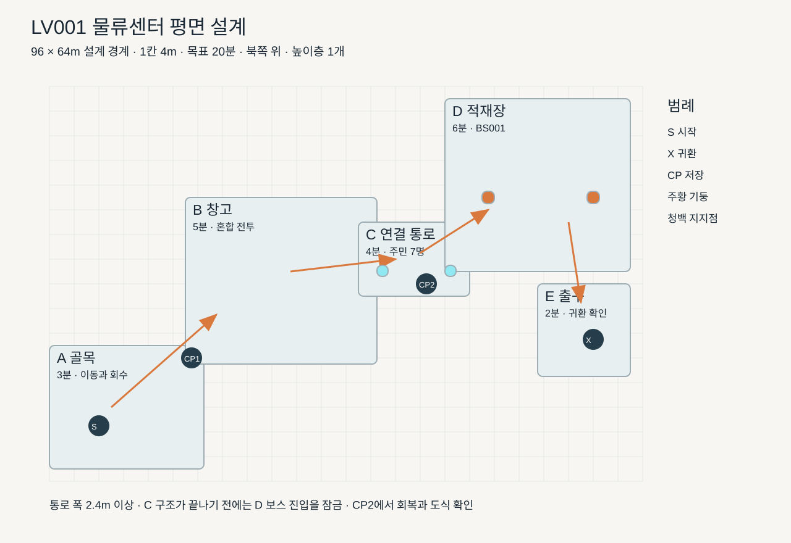
LV001.svg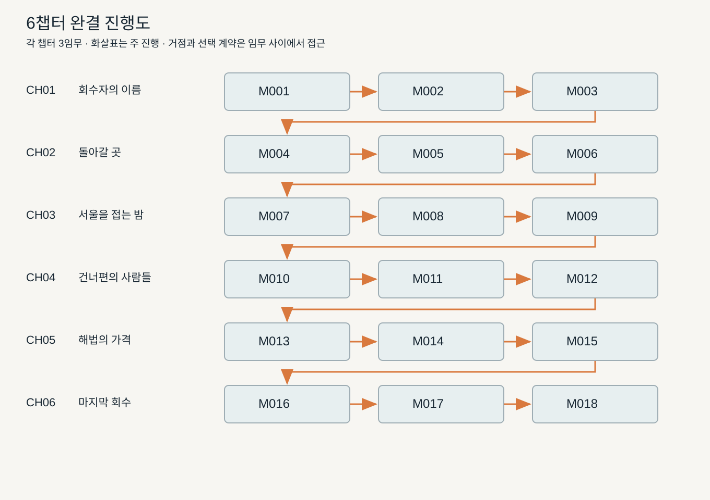
Campaign_Flow.svg세계관과 완결 시나리오
시대와 사회
2036년 서울이다. 2018년 백야정전 이후 현실과 위상층이 접촉했고 일부 인간의 신경계가 에너지를 제어하게 되었다. 위상재난청은 대피와 면허를 관리하며, 민간 방재기업은 현장 작업과 앵커 유지보수를 맡는다. 앵커 보호 등급이 부동산 가격과 보험료를 바꾼다. 평범한 편의점과 지하철이 유지되는 가운데 특정 지역의 재난 부담이 불평등하게 커진다.
세계의 규칙
위상층은 사후세계가 아니며 죽은 사람을 되살릴 수 없다. 이능력에는 공급원, 정보, 주의력과 신체 감당량이 필요하다. 태경은 붕괴한 능력의 도식을 읽어 이해한 부분을 재현한다. 학습되지 않은 도식을 무조건 복사하지 않는다. 게임의 반복 사망과 재시도는 서사상 시간 회귀가 아니라 플레이 편의 기능이다.
인물의 목적
태경은 하린의 치료비를 마련하려다 현장 사고 조작을 발견한다. 서린은 살아 있는 사람을 구할 시간을 확보하며 태경의 무모함을 제어한다. 도윤은 현장 지휘관으로, 미라는 계약과 보상의 책임자로 귀환방재를 만든다. 백기석은 전원 귀환이라는 원칙을 남긴다. 이선우는 희생의 수를 계산하며 세계를 지켜 왔다. 세라트는 위상층의 생존을 위해 인간과 협상하지만 자기 문명의 책임도 숨긴다.
CH01 회수자의 이름
M001 물류센터에서 일곱 명을 구하고 첫 회수 도식을 배운다. 원작의 열세 명 사고는 체험판의 인원 파악을 위해 일곱 명으로 각색한다. M002 학교 구조에서 서린과 도윤을 만나 회수와 구조의 관계를 확립한다. M003 조작된 앵커 기록을 확보하고 태산위상의 고용 제안을 거절한다. CH01 보스 BS001의 강화 계약전은 M003 말미에 재활용하되 신규 원형으로 세지 않는다.
CH02 돌아갈 곳
M004 귀환방재 설립 후 주거 지역의 공동 계약을 수행한다. M005 기업 방벽에 갇힌 아파트를 열고 데이터를 공개한다. M006 저등급 지역 연쇄 붕괴에서 백기석이 수동 통로를 유지하다 치명상을 입는다. 플레이어가 구조를 완수해도 이미 발생한 그의 뇌 손상은 회복되지 않는다. 이 사건은 선택 실패 벌점이 아니라 작전 뒤에 이어지는 고정 서사임을 과도한 구출 목표로 오해시키지 않는다. 태경은 아버지의 회수 지도를 받는다.
CH03 서울을 접는 밤
M007 열한 명의 실험 생존자를 찾아 태경의 통로가 특정 도식에 고정되지 않은 이유를 알아낸다. M008 재난청과 공동 탐사 중 세 앵커가 연쇄 불안정에 빠진다. M009 서울 지하철과 한강 방향 대피로를 연결한다. 이선우의 전면 봉쇄와 태경의 분산 구조가 충돌하지만 실증된 안전 경로를 근거로 봉쇄 범위를 조정한다. 태경은 지역 수준 회수권역의 원형을 만들고 위상층의 구조 요청을 듣는다.
CH04 건너편의 사람들
M010 위상층 피난 도시에서 세라트와 접촉한다. 중립 피난민과 적대 병력을 명확한 표식과 대사로 구분한다. M011 인간의 앵커가 불안정을 위상층에 밀어냈다는 기록과 서기관 집권층의 은폐를 함께 확인한다. M012 양측 피난민의 통로를 방어하고 아버지의 사망 기록을 찾는다. 그는 3년 전에 죽었으며 남은 신호는 반복 잔향이다. 부활이나 생존 반전은 없다. 태경은 아버지가 남긴 귀환로를 이어받는다.
CH05 해법의 가격
M013 유지위원회의 제재 속에서 연구 자료를 분산 공개한다. 직원들은 위험을 알고 잔류를 선택한다. M014 양방향 앵커의 첫 대규모 실험에서 예측하지 못한 열이 발생해 시설이 손상된다. 사전 대피와 중단 기준 덕분에 인명 피해를 막는다. 플레이어가 완벽하게 수행해도 설계의 불완전성은 남는 장면이다. M015 냉각, 소모 설비, 양측 제어 정보를 결합해 공동 보호 구역을 가동한다. 회수권역 SK008이 정식 해금된다.
CH06 마지막 회수
M016 유지위원회 강경파의 폐문 설비와 위상층 보복 병력을 동시에 저지한다. 강경파 대표는 별도 신규 주요 캐릭터 모델 대신 헬멧을 쓴 EN008 파생 지휘관과 통신 음성으로 표현한다. M017 도윤의 대피선, 하린의 제어망, 미라의 설비 접근권 협상이 연결된다. M018 태경은 중심부 BS006 폐문핵을 상대하며 제어 노드 3개를 동료에게 이양한다. 누적된 힘을 자신에게 모으는 대신 분산망으로 돌려 양쪽 붕괴를 막는다.
완결
이선우는 살아남아 재판을 받는다. 태산위상의 필수 설비와 기술자는 공공 감독 체계로 재편되고 책임자들은 조사받는다. 귀환방재는 운영권을 분산하고 태경의 권한도 감사 대상이 된다. 하린은 자기 치료와 연구를 결정한다. 태경과 서린은 연인 관계를 이어 간다. 능력은 유지되고 과부하 후 재활을 거친다. 마지막 짧은 플레이에서는 초반과 비슷한 작은 균열을 손쉽게 정리하고 일곱 명의 귀환을 확인한다. 엔딩 문장은 그날의 작업일지에는 들어간 사람과 돌아온 사람의 수가 같았다이다.
분기 정책
주요 인물의 생사와 최종 해법은 고정이다. 선택은 계약의 공개 방식, 동료의 신뢰 대사, 선택 구조자와 거점 회복 풍경에 반영한다. 잘못된 초기 대사 하나로 완결을 잠그지 않는다. 주요 장면 스킵은 가능하고, 스킵 시 상태 플래그와 보상은 정상 완료와 동일하게 적용한다.
연출 범위
장편 소설의 국제정치와 생존자 추적은 거점 대화, 자료 화면, 짧은 통신으로 압축한다. 실제 플레이는 목표와 공간이 있는 사건에 집중한다. 완전한 얼굴 모션 캡처 대신 전신 포즈, 시선, 제한된 표정과 카메라 컷을 사용한다. 폭력은 충격과 파편 중심이며 사지 절단과 장기 묘사는 계획하지 않는다.
대사와 컷신 스크립트
형식과 구현
대사는 dialogue.csv의 line_id, scene_id, speaker_id, text_ko, emotion, trigger, next_id, skippable 필드를 사용한다. 일회성 대사는 완료 플래그를 남기고 재진입 시 반복하지 않는다. 전투 안내는 중요도 3, 스토리는 2, 환경 대화는 1이다. 높은 중요도가 낮은 중요도를 중단할 수 있지만 같은 중요도는 큐로 보관한다. 사망 화면에서 대사 큐를 비운다.
오프닝 CS001
검은 화면에서 물류센터 전기음과 먼 안내방송이 들린다. 카메라는 젖은 골목에서 회수 차량을 지나 태경의 왼쪽 장갑으로 접근한다. 기석이 작업자 숫자를 확인한다. 플레이어는 이동이 가능해진 뒤 통제선을 통과한다. 대사는 걸으면서 재생하고 이동을 불필요하게 막지 않는다.
기석은 안에 남은 작업자가 일곱 명이라고 말한다. 이 일곱 명은 태경과 기석을 제외한 구조 대상이다. 태경은 짧게 확인한다. 잔향이 거꾸로 흐르자 태경은 안전 판정과 실제 현장이 다르다고 보고한다. 기석은 먼저 나갈 길을 확인하라고 답한다. 여기서 잔향 감지 안내가 열린다.
붕괴 CS002
플레이어가 창고 제어반에 접근하면 고정 컷 2개로 천장과 끊어지는 케이블을 보여 준다. 붕괴 먼지는 0.5초 뒤 전투 시야가 확보될 정도로 줄인다. 장면 종료 시 CP1을 저장하고 적의 첫 공격까지 최소 2초 유예한다. 태경이 방벽 잔재를 만지는 손은 왼손으로 통일한다.
기석의 마지막 CS006
이미 구조된 사람들과 구급차를 먼저 보여 준다. 기석은 자신이 만든 통로가 끝까지 유지됐는지 묻는다. 태경은 숫자가 맞았다고 대답한다. 서린은 처치를 멈춘 뒤 태경의 시선을 피하지 않는다. 선택지와 QTE를 넣지 않는다. 구조 성공을 눌러도 인물이 죽는 기만적 인터랙션을 만들지 않는다.
최종 이양 CS018
중심부 제어 화면에 동료별 노드가 표시된다. 플레이어가 한 번에 하나씩 이양하며, 각 노드는 받는 동료의 응답 뒤 활성화된다. 도윤은 귀환로, 하린은 앵커 주기, 세라트는 위상층 방출을 맡는다. 태경이 마지막 도식을 해체할 때 서린은 통신으로 상태를 확인한다. 대사 종료 전에 플레이어 조작을 되돌리고 보스의 마지막 패턴은 충분히 예고한다.
엔딩 CS019
작은 재난 현장의 일곱 명을 직접 확인하는 짧은 플레이 뒤 태경이 일지를 닫는다. 아이의 질문과 태경의 답을 주고받는다. 귀환방재 문 앞에서 서린과 만나며 휴대전화에 하린의 저녁 메시지가 도착한다. 마지막 화면은 세계지도 대신 같은 숫자가 적힌 작업일지다.
현지화와 보이스
한국어가 원문이며 영어 번역은 키 기반으로 추가한다. CSV의 한국어를 런타임 식별자로 쓰지 않는다. 자막 2줄 기본, 한국어 한 줄 약 28자 목표이며 길면 의미 단위로 분할한다. 자동 넘김을 끌 수 있다. 이름 발음은 윤태경 Yun Tae gyeong, 한서린 Han Seo rin으로 녹음 지시서에 별도 표기한다. 이미지의 영문 표기는 제작용이며 최종 영문명 표준은 Yoon Taekyung과 Han Seorin이다.
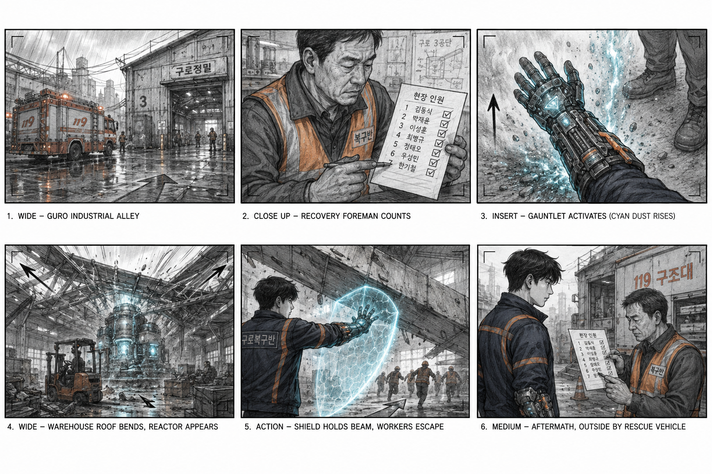
오프닝 스토리보드 · AI 생성 콘셉트 · 실제 게임 캡처 아님UI와 사용자 흐름
시각 기준
기준 캔버스 1920×1080, 가장자리 안전 여백 48px, 본문 22px, 핵심 자원 28px, 자막 28~40px 조절을 초기값으로 둔다. 1280×720에서도 주요 조작과 자막이 잘리지 않아야 한다. 고정 픽셀만으로 배치하지 않고 모서리 앵커와 중앙 안전 영역을 사용한다. 제공된 UI_Wireframes.svg는 6개 주요 화면의 와이어프레임, UI_Wireflow.svg는 이동 구조다.
전체 흐름
부팅에서 밝기와 자막을 설정한 뒤 타이틀로 간다. 새 게임은 저장 슬롯을 선택하고 CS001로 진입한다. 이어하기는 최신 유효 체크포인트를 불러온다. 거점에서 임무 선택, 장비, 연구, 기록실로 이동한다. 출동 전 도식과 난이도를 확인하고 현장으로 들어간다. 현장에서는 일시정지와 옵션을 열 수 있으며 결과 화면에서 보상과 구조 결과를 확인한 뒤 거점으로 돌아간다.
HUD
왼쪽 위에는 HP와 체력, 왼쪽 아래에는 에너지, 아래 중앙에는 도식 3개와 권역 슬롯을 둔다. 오른쪽 위에는 현재 필수 목표 하나와 구조 인원, 필요 시 제한시간을 둔다. 잔향은 월드 아이콘과 회수 가능 윤곽으로 표시하고 화면 가장자리에서 중요 구조 위치를 안내한다. 주 목표는 최대 2줄로 제한한다. 인벤토리 전체를 전투 화면에 노출하지 않는다.
연구 화면
왼쪽에는 도식 목록, 중앙에는 현재 기본형과 선택 변형, 오른쪽에는 비용과 작동 예시를 둔다. 잠긴 도식은 필요한 임무와 증거를 표시한다. 구매 전후 성능은 같은 단위로 비교한다. 해금 버튼을 누르면 변경 내용을 보여 주고 장착 여부를 선택한다. 재화 부족은 버튼 옆에서 원인을 설명한다.
입력 매핑
WASD 이동, 마우스 조준, 좌클릭 공격, Space 회피, 우클릭 회수, E 상호작용, Q F R 도식, C 권역, Tab 기록 또는 지도, Esc 일시정지다. 패드는 LS 이동, RS 조준, RT 공격, A 회피, LT 회수, X 상호작용, LB RB Y 도식, DpadUp 권역, View 지도, Menu 일시정지다. 모든 핵심 행동은 재매핑 가능해야 한다. 충돌 키는 적용 전 알려 주고 비어 있는 필수 입력도 검출한다.
포커스와 메뉴
패드 메뉴는 첫 유효 버튼에 포커스를 둔다. 팝업이 닫히면 열었던 버튼으로 돌아간다. 마우스와 패드 전환 시 안내 아이콘만 바꾸고 선택 상태는 유지한다. 되돌아가기 동작은 항상 이전 화면으로 이동한다. 거래 취소는 지갑과 인벤토리를 바꾸지 않는다. 게임패드 연결 해제 시 일시정지하고 재연결 또는 키보드 사용 안내를 보여 준다.
상태와 오류 문구
저장 중에는 작은 회전 표시와 저장 중 문구를 사용한다. 저장 실패 시 저장 공간을 확인해 주세요와 재시도 버튼을 제공하며 기존 저장을 덮어쓰지 않는다. 최신 저장이 손상되면 백업 시각을 보여 주고 복원을 제안한다. 연구 재료 부족은 필요한 합금 3개 중 2개 보유처럼 수량을 말한다. 기술 내부 예외 이름은 사용자 화면에 노출하지 않는다.
가독성과 편의
색만으로 적대와 중립을 구분하지 않는다. 적은 뾰족한 경고 프레임, 구조자는 둥근 사람 아이콘이다. 카메라 흔들림 0~100퍼센트, 섬광 낮음, 화면 왜곡 끄기, 진동 끄기를 제공한다. 회수 길게 누르기를 토글로 바꿀 수 있다. 자막에는 화자 이름과 방향성 소리의 텍스트 대체를 제공한다. 메뉴 텍스트 대비 목표는 4.5대1이며 실제 색조합 측정이 필요하다.
결과 화면
필수 구조 완료 여부, 귀환 인원, 새 도식 증거, 확정 크레딧과 재료를 표시한다. 빠른 클리어가 구조보다 우선하는 점수 체계를 두지 않는다. 결과 화면 중 종료해도 동일 완료 보상을 한 번만 지급한다. 도전 계약 시간 기록은 선택 정보로 별도 표시한다.
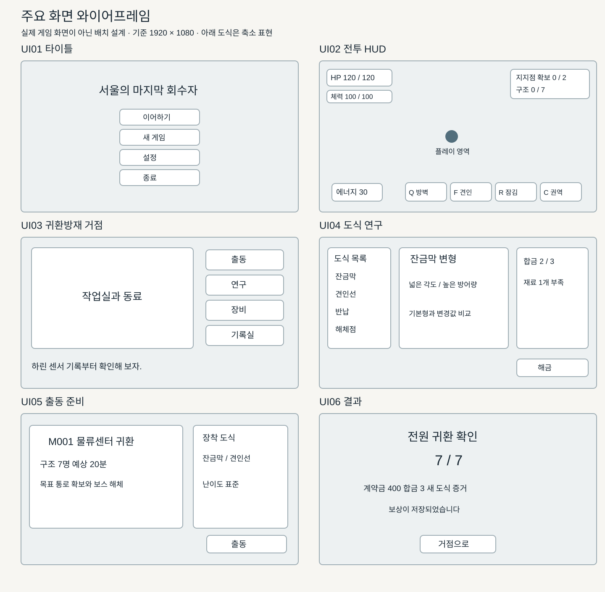
UI_Wireframes.svg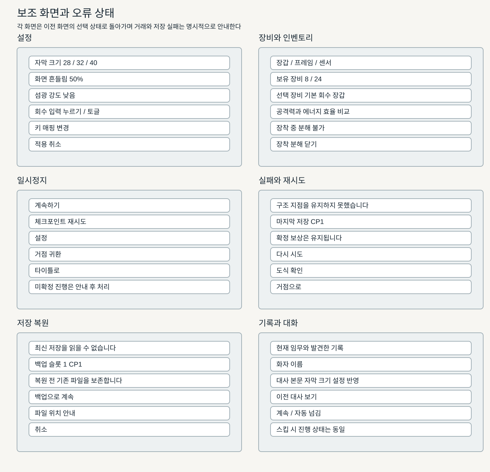
UI_Secondary.svg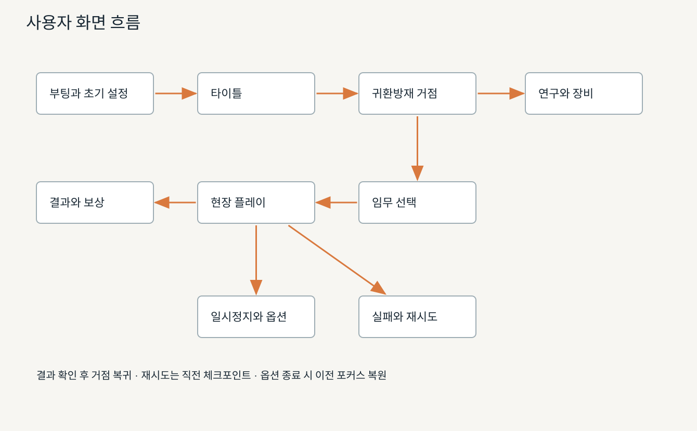
UI_Wireflow.svg캐릭터 설정과 디자인
캐릭터 보드는 제작 방향을 보여 주는 콘셉트다. 모델 제작에서는 아래의 신장, 장비 위치와 의상 규칙을 우선한다. 생성 이미지의 비례나 작은 문자가 다르면 이 문서에 맞춰 교정한다. TK01은 직접 조작, 나머지 일곱 명은 비조작 주요 인물이다.
TK01 윤태경
27세 남성, 178cm, 마른 근력형이다. 짧고 흐트러진 검은 머리, 피곤한 눈과 관찰할 때 굳어지는 입매를 사용한다. 남색 작업 재킷, 주황 안전띠, 회색 카고 바지, 검은 안전화가 기본이다. 회수 장갑은 반드시 왼팔, 일반 작업 장갑은 오른손이다. 금속 장갑은 탈착 가능한 외피이며 손가락의 굽힘을 막지 않는다. 얼굴에 거대한 흉터나 비현실적인 문신을 추가하지 않는다.
성격은 신중하지만 책임을 혼자 떠안는다. 아버지 실종과 하린의 치료 때문에 학업을 중단하고 회수 일을 한다. 서린에게 치료받는 것을 빚으로 느끼다가 동등한 협력으로 받아들인다. 기석의 전원 귀환 원칙을 계승한다. 대표 실루엣은 왼팔의 두꺼운 장갑과 짧은 작업 재킷이다. 색 변형 A 남색과 주황을 기본형으로 확정하고 B 회색과 청백은 연구 외형, C 올리브와 아이보리는 선택 작업복 후보로 둔다. 성능은 동일하다.
SR01 한서린
29세 여성, 170cm, 균형 잡힌 체형이다. 검은 머리를 묶고 청록 남색 응급 재킷과 아이보리 패널, 평평한 구조화를 착용한다. 긴 의사 가운은 현장에서 사용하지 않는다. 왼쪽 허리 의료 가방, 오른쪽 손목 고정 도식 밴드, 가슴 명찰이 고정 소품이다. 능력은 손상 진행을 잠시 고정하며 죽은 사람을 되살리지 않는다. 감정은 차분한 집중, 짧은 분노, 피로 속 안도에 집중한다. 태경의 연인이 되지만 의료 판단을 양보하지 않는다.
HR01 윤하린
22세 여성, 163cm, 검은 단발과 옅은 올리브 후드 작업복이다. 태블릿은 양손으로 잡거나 오른손에 들며 노란 귀 보호구를 목에 건다. 환자복은 과거 장면에서만 사용한다. 위상 감각 이상을 기록하고 공학 지식으로 해석하는 연구자다. 오빠를 걱정하면서도 자신을 보호 대상으로만 보는 태도에 반발한다. 주요 포즈는 태블릿 검토, 센서 조정, 반박하며 손을 드는 동작이다.
DY01 강도윤
31세 남성, 185cm, 넓은 어깨와 짧은 검은 머리다. 흑연색 구조 하네스와 녹슨 주황 어깨 패널, 동작을 방해하지 않는 전완 보호대를 쓴다. 태경보다 큰 실루엣과 빠르게 방향을 바꾸는 자세로 구분한다. 가속 능력은 발과 전완의 짧은 잔상으로 표현한다. 초반에는 태경의 현장 자격을 의심하지만 전문성을 인정한다. 후반에도 경쟁심을 유지하면서 팀 지휘를 맡는다.
MR01 오미라
35세 여성, 168cm, 정돈된 짧은 머리와 짙은 갈색 실무형 정장이다. 외근에는 낮은 굽 부츠와 방수 외투를 더한다. 수첩, 휴대전화, 서류 가방이 소품이다. 비능력자이며 계약과 책임 소재를 추적한다. 능력자의 도움 없이도 의사결정을 할 수 있는 인물로 표현한다. 대표 표정은 의심, 계산, 단호한 미소다. 거점에서는 노트북 화면을 직접 누르며 대화한다.
BK01 백기석
54세 남성, 173cm, 약간 굽은 어깨와 닳은 손이다. 남색 작업복과 낡은 주황 안전조끼, 손전등과 수동 공구를 사용한다. 안전모는 위험 현장 진입 시 착용하고 거점에서는 벗는다. 과장된 노인 체형 대신 오랜 육체노동자의 자세를 사용한다. 들어간 사람의 숫자를 확인하는 습관이 있고 태경의 실질적 스승이다. 사망 장면은 노출 상처보다 호흡, 손과 대화로 전달한다.
SW01 이선우
46세 남성, 182cm, 절제된 표정과 곧은 자세다. 흑연색 테크니컬 코트와 흰색 분절형 경계 방출기를 사용한다. 경계 도식은 둥근 마법진보다 얇은 직선 평면이다. 세계를 지켜 왔으나 희생을 계산에 포함시키는 데 익숙하다. 태경의 대안을 확인한 뒤 자료를 공개하고 구조에 참여한다. 마지막에 죽어서 면죄받지 않고 살아서 재판받는다.
ST01 세라트
인간 기준 중년기인 서기관 외교관, 신장 210cm다. 현무암과 세라믹 같은 층상 몸, 떠 있는 아이보리 얼굴판, 호박색 관절 빛을 가진다. 팔은 총 3개이며 추가 팔은 해부학적 오른쪽 옆구리의 주 팔 아래에 붙는다. 모든 뷰에서 이 위치를 유지한다. 인간 옷을 그대로 입히지 않고 판 구조 자체가 외교관의 의장 역할을 한다. 감정은 얼굴판 간격, 기울기, 관절 발광의 느린 변화로 표현한다.
관계
태경과 하린은 보호와 자율성을 놓고 갈등하는 남매다. 태경과 서린은 전문적 신뢰에서 연인으로 발전한다. 태경과 도윤은 동료이자 경쟁자, 태경과 미라는 현장과 운영의 공동 책임자다. 기석은 태경의 스승이며 아버지의 기록을 보관했다. 이선우는 태경의 과거 실험 책임자이자 현재의 방법론적 대립자다. 세라트와 태경은 서로의 은폐를 확인한 뒤 협력한다. 별도 관계도 Characters_Relations.svg를 참조한다.
표정과 포즈 범위
주인공은 중립, 집중, 두려움, 분노, 슬픔, 안도의 6표정과 달리기, 회피, 회수, 방어의 4대표 포즈를 이미지로 제공한다. 동료는 중립과 대표 감정 2개, 거점 포즈 2개를 초기 제작 범위로 한다. 구체적인 키프레임 제작은 animation_list.csv를 따른다. 현장 대화는 얼굴 확대보다 전신의 방향과 손동작이 우선이다.
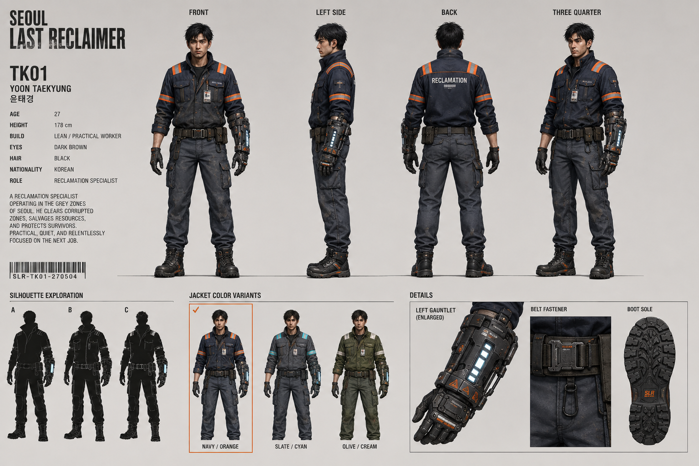
태경 모델 참고와 실루엣 및 색 변형 · AI 생성 콘셉트 · 실제 게임 캡처 아님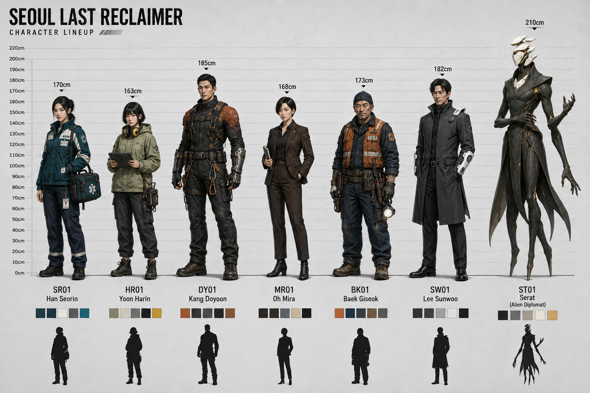
주요 인물 라인업과 신장 · AI 생성 콘셉트 · 실제 게임 캡처 아님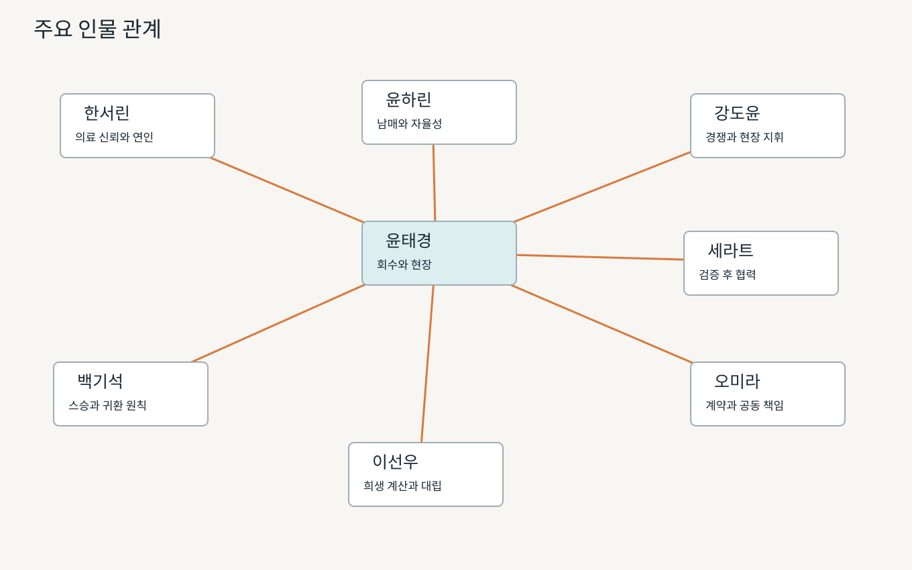
Characters_Relations.svg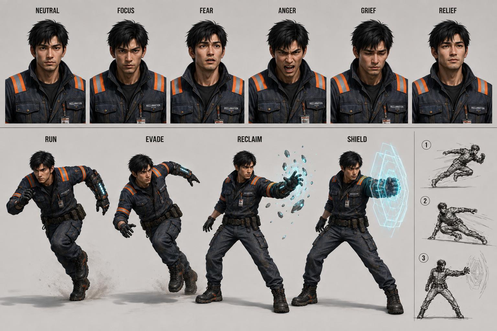
태경 표정과 액션 포즈 · AI 생성 콘셉트 · 실제 게임 캡처 아님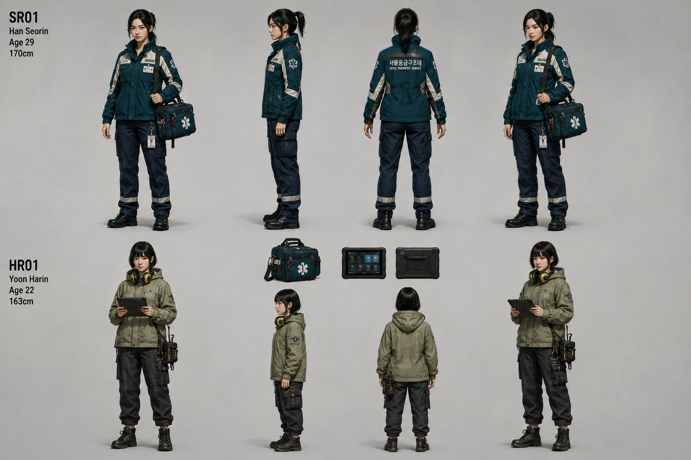
서린과 하린 모델 참고 · AI 생성 콘셉트 · 실제 게임 캡처 아님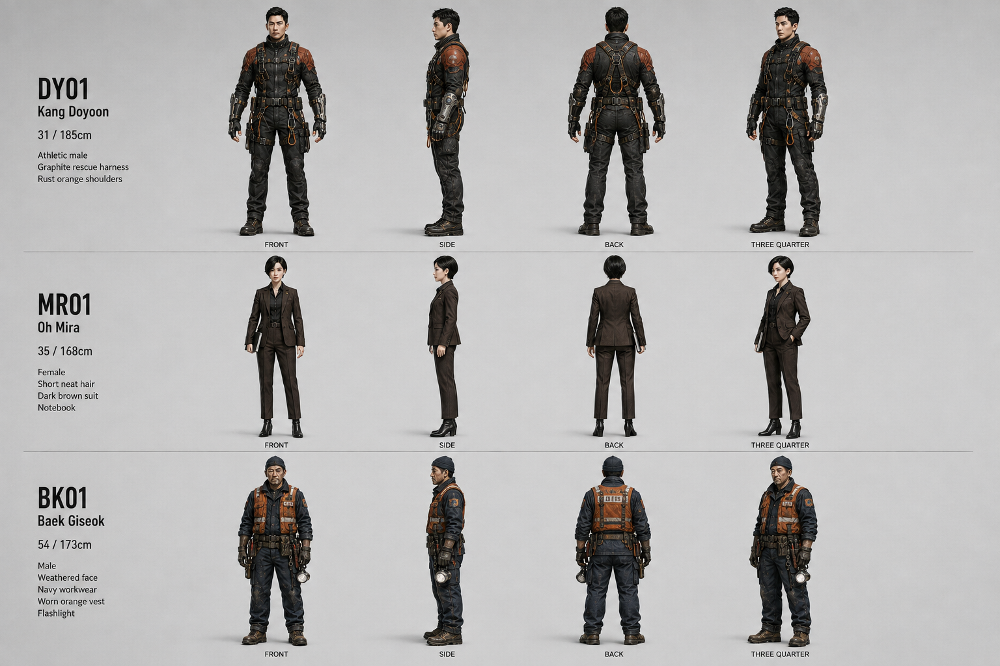
도윤과 미라 및 기석 모델 참고 · AI 생성 콘셉트 · 실제 게임 캡처 아님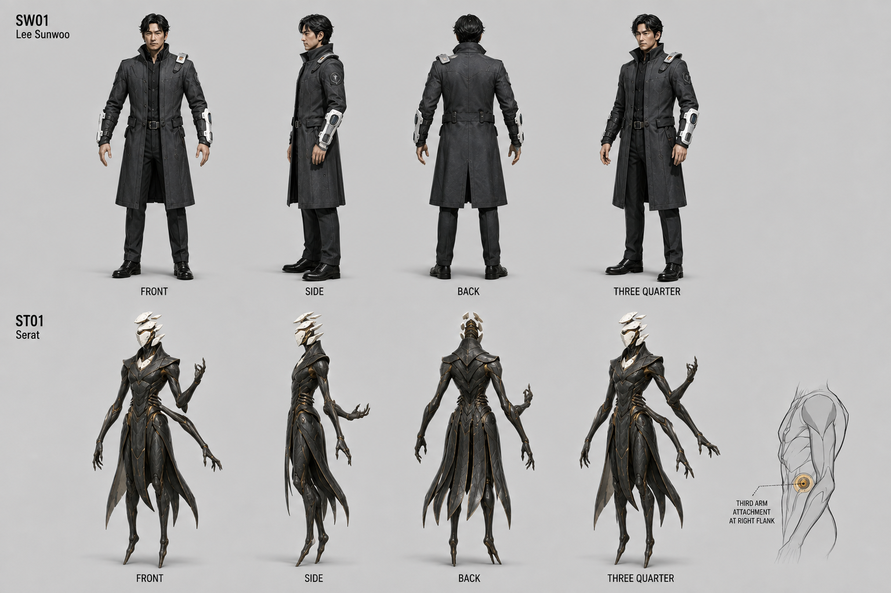
선우와 세라트 모델 참고 · AI 생성 콘셉트 · 실제 게임 캡처 아님캐릭터 모델과 애니메이션 제작 사양
모델 사양
단위 1 Unity unit = 1m, Y 위쪽, 캐릭터 +Z 전방을 기준으로 한다. DCC의 축 차이는 FBX 내보내기와 테스트 프리팹에서 검증한다. TK01 신장 1.78m이며 발바닥을 원점 높이 0에 둔다. 스케일 1, 회전 0을 적용하고 음수 스케일은 사용하지 않는다. 컨셉 시트는 정렬 참고이며 최종 정투영 검사는 DCC에서 수행한다.
LOD0 주인공 2500035000 삼각형, NPC 1200020000, 일반 적 800016000, BS001 2500040000을 목표 상한 범위로 제안한다. LOD1은 약 50퍼센트, LOD2는 약 25퍼센트로 축소한다. 실제 카메라 크기와 성능 측정으로 확정한다. 중요 실루엣인 왼팔 장갑과 어깨띠는 LOD1에서도 유지한다.
토폴로지
어깨, 팔꿈치, 손목, 무릎은 굽힘 방향을 따라 최소 3줄의 변형 루프를 둔다. 주인공 왼손은 회수 포즈에서 손바닥이 보이므로 손가락 분리를 유지한다. 장갑 외피와 팔은 다른 메시로 나누되 관통하지 않아야 한다. 표정 확대를 쓰는 주인공과 서린은 눈과 입 주변 루프를 유지한다. 세라트는 인간 Humanoid 자동 리타깃을 사용하지 않고 Generic 리그를 사용한다.
리그
인간형은 root, pelvis, spine 3개, neck, head, 좌우 clavicle, upperarm, forearm, hand, thigh, calf, foot, toe를 필수로 둔다. 손가락은 주인공과 주요 근접 인물에 제공한다. 최대 4 bone weight per vertex, 전체 변형 본 90개 이하 목표다. 장갑에는 FX_Reclaim_L, FX_Shield_L, 도구에는 Socket_Tool_R를 둔다. 위치 표준은 실제 모델의 왼쪽과 오른쪽이며 화면 방향을 기준으로 바꾸지 않는다.
텍스처
TK01 몸 2048×2048, 얼굴 1024×1024, 장갑 1024×1024를 초기 기준으로 둔다. NPC는 몸 2048 한 세트를 우선하고 근접 연출에만 얼굴 세트를 추가한다. BaseColor와 Emission은 sRGB, Normal과 ORM은 linear다. ORM은 R occlusion, G roughness, B metallic의 중간 산출물이며 엔진 기본 Lit이 이를 직접 해석한다고 가정하지 않는다. 반입 도구 또는 전용 Shader Graph에서 metallic R와 smoothness A로 변환한다. roughness와 smoothness의 반전 여부를 테스트 카드로 검사한다.
애니메이션 기준
애니메이션은 30fps 샘플로 저장하며 gameplay 타이밍은 초 단위 데이터가 결정한다. 이동은 in-place와 코드 이동을 기본으로 하고 컷신만 root motion을 사용한다. 공격 판정과 발소리는 이름이 정해진 이벤트를 통해 연결하되 게임 논리가 시각 이벤트 하나에만 의존하지 않게 한다. 상세 모션 목록은 animation_list.csv에 duration_s와 frames를 함께 기록한다.
| 모션 |
초 |
30fps 프레임 수 |
반복 |
이벤트 |
| Idle |
2.0 |
60 |
예 |
호흡 |
| Run |
0.8 |
24 |
예 |
좌우 발소리 |
| Attack01 |
0.5 |
15 |
아니오 |
0.18초 타격 |
| Dodge |
0.4 |
12 |
아니오 |
논리 이동 0.35초 |
| ReclaimStart |
0.4 |
12 |
아니오 |
채널 시작 |
| ReclaimLoop |
0.8 |
24 |
예 |
토큰 흡입 |
| ShieldCast |
0.6 |
18 |
아니오 |
방벽 생성 |
| PullCast |
0.5 |
15 |
아니오 |
연결점 생성 |
| HitLight |
0.3 |
9 |
아니오 |
경직 |
| Death |
1.6 |
48 |
아니오 |
조작 해제 |
검수
정면, 좌측면, 후면, 3/4 캡처를 동일 카메라와 광원에서 제출한다. 팔 120도, 무릎 120도 굽힘에서 관절 붕괴와 장갑 관통을 검사한다. 발 미끄러짐은 이동 속도 5.2m/s에서 확인한다. 스킨 메시 bounds가 회수 및 방어 포즈를 모두 포함해야 한다. 모델러가 실제 제작한 FBX와 PNG 텍스처는 아직 없으며 이번 패키지의 이미지는 그 제작 기준이다.
아트 바이블
시각 방향
현대 한국 도시의 구체적인 재료와 생활 흔적 위에 국소적인 비정상 현상을 배치한다. 대체로 익숙한 도시가 보이고 균열 주변에서만 중력, 반사, 그림자의 불일치가 드러난다. 캐릭터는 현실적 비율을 바탕으로 얼굴과 장비 형태를 약간 단순화한다. 주인공이 작은 화면에서도 읽히도록 어깨띠와 왼팔 실루엣을 강조한다.
팔레트
기본 남색 #182733, 콘크리트 #7D8589, 작업복 회색 #3E474E, 안전 주황 #D9793E, 회수 청백 #8FE8F2, 안전 아이보리 #F1E6CC, 균열 보라 #8B79B9를 기준으로 한다. 위험 공격은 #F08555의 면과 뾰족한 경계, 아군 능력은 가는 청백 선으로 구분한다. 색각 차이를 고려해 형태와 아이콘을 함께 쓴다.
형태와 선
도시 구조는 직선, 볼트, 판재, 타일의 반복이다. 인간의 도식은 공학적 선과 분할된 막, 서기관 구조는 층상 판과 비대칭 관절이다. 외곽선은 모든 물체에 적용하지 않고 상호작용과 가려진 인물에 한정한다. 1080p에서 약 1~2px의 윤곽을 목표로 하며 해상도에 따라 보정한다. 지나치게 굵은 만화선이나 인물 얼굴의 사실적인 모공을 혼합하지 않는다.
조명과 재질
주 광원 1개, 정적인 건물 조명은 베이크 또는 제한된 실시간 조명을 사용한다. 비 오는 밤만 반복하지 않고 새벽 창고, 낮 아파트, 차가운 지하철, 따뜻한 피난소를 교차한다. 젖은 표면은 반사와 거칠기 차이를 주지만 모든 면을 거울처럼 만들지 않는다. 전투 바닥의 명도는 캐릭터 하체와 위험 표식이 구분될 수준을 유지한다. 콘셉트 이미지가 어둡더라도 플레이 화면의 노출 기준을 우선한다.
이펙트 동작
회수는 흩어짐, 감속, 방향 정렬, 왼팔 수렴의 네 단계다. 방벽은 바깥층부터 순서대로 반응하며 충격이 옆으로 퍼진다. 해체는 연결부가 풀리고 판이 분리되는 방식이다. 폭발은 결과로 제한하고 모든 능력을 폭발형으로 만들지 않는다. 전경 이펙트보다 적 공격 예고와 구조 표식의 표시 우선순위를 높인다. 전체 화면 왜곡은 짧게 사용하며 끄기 옵션에서도 공격 정보를 유지한다.
현대 배경
상점 간판과 공공 표지는 가상의 브랜드와 노선으로 제작한다. 생성 콘셉트에 우연히 나온 실존 상표나 실제 노선 문구를 최종 텍스처로 그대로 사용하지 않는다. 셔터, 배전함, 실외기, 주차 차단기, 적재 상자, 비상등과 대피 안내문으로 한국 도시의 밀도를 만든다. 핵심 상호작용 프롭은 색 테이프와 형태로 구분한다.
이미지 산출물
TK01 모델 및 컨셉 보드, TK01 표정과 포즈, 주요 인물 라인업, 동료 및 대립 인물 모델 참고 보드, 환경 4장면 보드, BS001과 적 원형 보드, VFX 보드, CS001 스토리보드를 제공한다. 각 보드의 원본은 art 폴더, 재생성 프롬프트와 생성 방식은 art_manifest.json에 기록한다. 실제 제작 시 의상 연속성과 장갑 좌우, 세라트의 세 팔 위치를 교정한다.
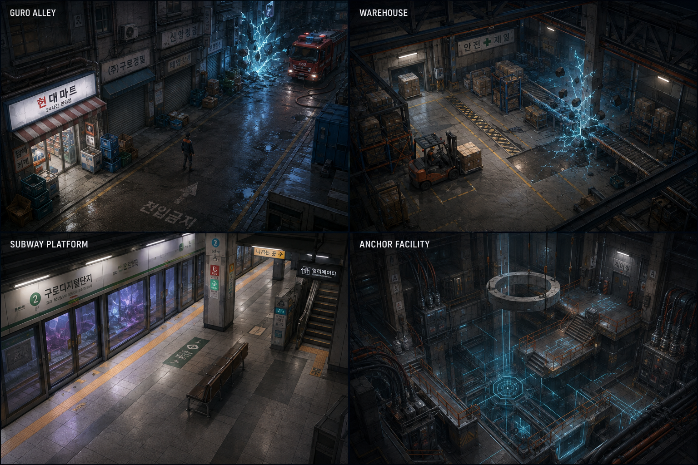
현대 서울 환경 콘셉트 · AI 생성 콘셉트 · 실제 게임 캡처 아님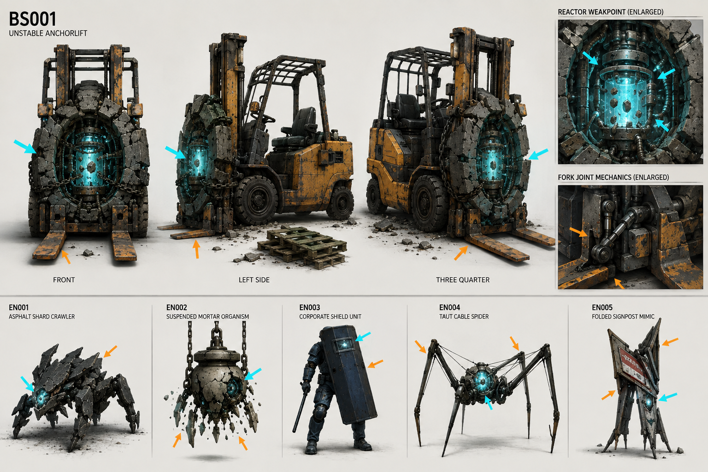
첫 보스와 적 원형 · AI 생성 콘셉트 · 실제 게임 캡처 아님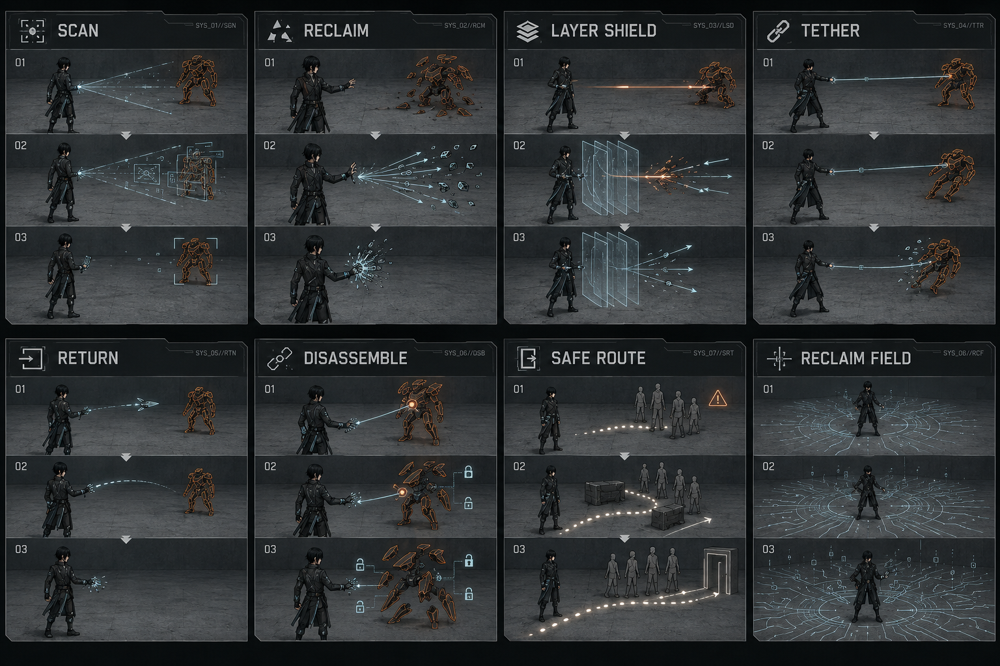
능력 이펙트 동작 참고 · AI 생성 콘셉트 · 실제 게임 캡처 아님에셋 목록과 반입 파이프라인
산출물 구분
asset_register.csv는 실제 제작해야 할 리소스의 목록이며 상태 Planned는 파일이 존재한다는 의미가 아니다. 생성 콘셉트는 Concept 상태로 별도 기록한다. 런타임 모델과 텍스처, UI, VFX, 음원은 제작과 엔진 검수가 필요하다. 환경 프롭과 재질을 조합하여 맵을 만들며 맵마다 모든 리소스를 새로 만들지 않는다.
명명
파일명은 종류_ID_설명_변형_LOD_용도의 영문 소문자와 숫자로 구성한다. 예시는 chr_tk01_body_a_lod0.fbx, tex_tk01_body_a_basecolor.png, anim_tk01_reclaim_loop.fbx, env_ev01_wall_4m_a.fbx, prp_pr004_shelf_a.fbx, vfx_sk003_shield.prefab, aud_sfx_reclaim_01.wav다. 작업 버전은 소스 폴더에서 v001처럼 기록하고 런타임 주소 ID는 버전이 바뀌어도 유지한다.
폴더
SourceArt/Characters, Environments, Props, UI, VFX, Audio를 DCC 소스로 관리한다. 게임 프로젝트에서는 Assets/SLR/Art, Audio, Data, Prefabs, Scenes, Scripts 아래에 반입한다. 대형 바이너리는 Git LFS 사용을 제안하고 .meta 파일은 항상 함께 관리한다. 자동 생성 JSON은 Generated에 두고 수동 편집하지 않는다.
환경 모듈
벽 2m와 4m, 바닥 2×2m, 문 폭 2.4m, 층고 3.6m를 모듈 기준으로 한다. pivot은 벽 하단 모서리, 바닥 모서리, 캐릭터 발밑, 회전 프롭 힌지다. 충돌체는 시각 메시보다 단순하게 만들고 움직이는 프롭에는 복잡한 비볼록 메시 콜라이더를 사용하지 않는다. 각도 고정 시점에서 카메라를 가리는 벽에는 FadeOccluder 태그와 대체 shadow 정책을 적용한다.
프롭 우선 목록
PR001 배송 상자, PR002 플라스틱 팔레트, PR003 배전함, PR004 철제 선반, PR005 지게차, PR006 컨베이어, PR007 화물 셔터, PR008 안전 기둥, PR009 작업등, PR010 소화기, PR011 실외기, PR012 통제선, PR013 회수 차량, PR014 의료 가방, PR015 대피 표지, PR016 이동 배터리, PR017 개찰구, PR018 스크린도어, PR019 변압기, PR020 앵커 링을 계획한다. VS는 PR001~016을 우선하되 PR013은 단순 배경 모델로 제작한다.
반입 순서
DCC에서 축과 단위 적용, 재질 이름 확인, FBX 및 PNG 내보내기, Unity 반입 프리셋, LOD와 충돌체 지정, 조명 테스트, 실제 쿼터뷰 캡처, 성능 측정 순으로 진행한다. 모든 캐릭터는 회색 배경 테스트 씬과 EV01 테스트 씬 두 곳에서 검수한다. 소스 라이선스와 AI 생성 여부를 리소스 레코드에 기록한다.
UI와 VFX 규격
UI 아이콘은 128×128 PNG RGBA, 주요 도식 아이콘은 256×256 원본, 메뉴 그림은 목표 화면 크기의 2배 이내로 제한한다. 폰트는 한글 포함 글리프와 상업 배포 허용 라이선스를 확인한 파일만 포함한다. VFX 텍스처는 256 또는 512 크기 우선, 반복 노이즈는 256, flipbook은 1024 상한 초기 목표다. 프레임 분할과 알파 방식은 리소스 메타데이터에 명시한다.
수락 기준
누락 텍스처 0, 잘못된 축 0, 음수 스케일 0, 비정상 실루엣과 장갑 좌우 오류 0, 지정된 머티리얼 슬롯 초과 0을 반입 전 검사한다. 주인공 LOD0 최대 머티리얼 3, NPC 2를 목표로 한다. 본편 에셋 총량은 asset_register와 backlog에서 추적하고 추가 리소스는 일정과 메모리 예산을 함께 검토한다.
기술 설계
엔진 결정
Unity 6 계열의 지원되는 LTS와 URP를 후보 기준으로 한다. 실제 개발 시작 때 공식 릴리스 상태, 필요한 패키지 호환성, 타깃 빌드를 검사하고 정확한 Editor 버전을 ProjectVersion.txt에 고정한다. 임의의 최신 버전 자동 업데이트는 하지 않는다. C# 싱글플레이 구조이며 실시간 게임 서버는 없다. Shader Graph와 파티클을 기본으로 하고 GPU VFX는 목표 장치에서 검증된 효과에만 사용한다.
코드 경계
Domain에는 피해 계산, 재화 거래, 도식 상태, 임무 조건의 순수 C# 규칙을 둔다. Application에는 CastSkill, CollectResidue, CompleteMission, PurchaseItem 같은 유스케이스를 둔다. Unity 어댑터는 입력, 물리, 애니메이터, 오디오, UI, 저장 경로를 연결한다. MonoBehaviour가 지갑과 저장을 각각 직접 수정하지 않게 한다. 부트스트랩 Scene이 서비스와 콘텐츠 카탈로그를 만들고 씬 전환은 SceneFlow가 관리한다.
주요 모듈
InputAdapter는 ActionCommand를 만든다. CharacterMotor는 지면 이동과 충돌을 처리한다. CombatResolver는 HitRequest를 받아 HitResult를 반환한다. SkillRunner는 시전 상태와 쿨다운을 관리한다. ResidueService는 토큰 ID와 수량을 단독 관리한다. MissionDirector는 목표 상태와 체크포인트를 관리한다. ProgressionService는 레벨과 도식 해금을 계산한다. SaveRepository는 검증과 원자적 파일 교체를 수행한다. UI Presenter는 결과를 표시한다.
이벤트 예시
SkillCastStarted(castId, skillId, actorId), DamageApplied(hitId, sourceId, targetId, amount), ResidueCollected(tokenId, amount), ObjectiveChanged(objectiveId, state), MissionCommitted(transactionId), SaveFailed(reasonCode)를 사용한다. 화면 표현용 이벤트와 권위 있는 상태 변경을 구분한다. 피해 이벤트를 구독한 이펙트가 다시 피해를 발생시키지 않는다.
저장
로컬 저장 슬롯 3개, 슬롯마다 current.json과 backup.json을 둔다. 임시 파일에 새 JSON을 쓰고 다시 읽어 스키마와 체크섬을 검사한 뒤 같은 디렉터리에서 원자적으로 이름을 교체한다. 체크섬은 손상 감지용이며 부정행위 방지 서명이 아니다. 저장 필드는 schemaVersion, contentVersion, saveId, committedTransactions, campaign, player, inventory, checkpoint, settings다. player에는 level, xp, equippedSkills, unlockedSkills를 포함한다. 임무 체크포인트는 적, 토큰 소비, 구조 목표, 임시 획득을 함께 저장한다.
마이그레이션
schemaVersion 1을 초기 버전으로 두고 이전 버전은 변환 함수 체인을 거친다. 미래 버전 파일은 덮어쓰지 않고 지원하지 않는 버전 안내를 한다. 보상 처리 transactionId는 임무 instanceId와 objectiveId로 생성하고 저장 레코드에 남긴다. 결과 화면 재진입, 강제 종료, 백업 복원 경로에서 중복 보상을 테스트한다. 설정 파일 손상은 기본값으로 복원할 수 있으나 진행 데이터 손상은 사용자에게 알린다.
장면과 자원
Bootstrap, Frontend, Hub, Mission을 분리한다. EV01부터 EV06까지 환경 프리팹과 조명 데이터를 재사용한다. 토큰, 투사체, 피격 VFX, 데칼은 풀링한다. 논리 토큰과 렌더링 입자를 분리하여 멀리 있는 토큰 표현을 줄여도 자원 판정은 보존한다. 런타임 전체 오브젝트 검색과 매 프레임 문자열 ID 검색을 피하고 카탈로그를 로딩 시 구성한다.
AI
적은 Idle, Acquire, Telegraph, Attack, Recover, Stagger, Dead 상태를 사용한다. Acquire에서 시야와 navFloorId를 검사한다. Telegraph에 들어간 공격은 castId를 고정하고 타깃 변경 규칙을 공격 데이터에 명시한다. 죽은 적의 스폰 슬롯과 토큰 생성은 단 한 번 해제한다. 구조 NPC는 지정 경로를 따르며 전투 AI를 공유하지 않는다.
네트워크
출시 게임은 오프라인 실행이 가능하다. 자체 로그인, 온라인 경제, 매치메이킹, 서버 API를 구현하지 않는다. Steam 구매와 배포는 플랫폼 기능이다. 업적과 Steam Cloud는 별도 어댑터로만 검토하며 선택 통합 전에는 해당 데이터 흐름을 개인정보 문서에 반영한다. VS는 Steam SDK 없이 실행한다. 스토어와 관계없이 로컬 저장이 동작해야 한다.
빌드와 테스트
유닛 테스트는 피해 내림, 자원 포화, 중복 회수, 거래 원자성, 해금 조건, 저장 마이그레이션을 다룬다. PlayMode는 벽 관통, 높이층 분리, HUD 포커스, 게임패드 연결 해제를 다룬다. CI는 데이터 스키마 검증, ID 중복 검사, 참조 누락, 테스트, Windows 빌드 순으로 수행한다. 빌드 태그, 콘텐츠 버전, 해시와 테스트 보고서를 함께 보관한다.
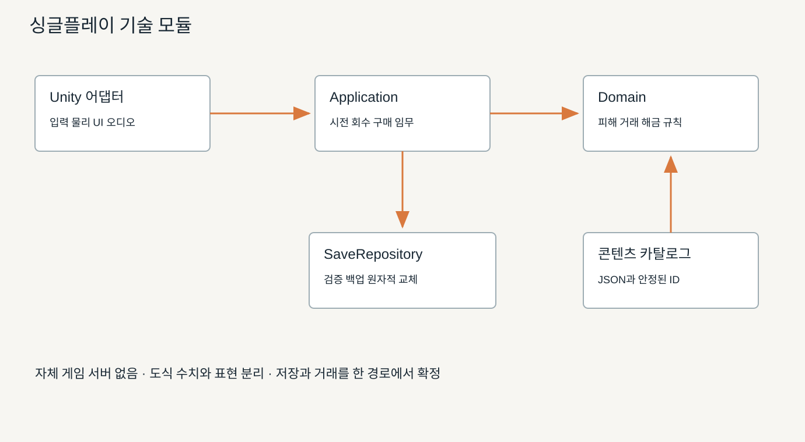
Technical_Architecture.svg타깃 장치와 성능 목표
이 문서의 기기 사양은 개발 및 측정에 사용할 가정이다. 아직 실행 게임이 없으므로 최소 사양 인증이나 벤치마크 결과로 스토어에 게시할 수 없다.
후보 장치
기본 검증 PC는 Windows 11 64bit, Intel i5 8400 또는 Ryzen 5 2600급 CPU, GTX 1650 4GB급 GPU, RAM 16GB, SSD로 잡는다. 권장 검증 PC는 i5 12400 또는 Ryzen 5 5600급 CPU와 RTX 3060 12GB급 GPU, RAM 16GB다. 이 표는 성능 동등성을 인증하는 목록이 아니라 확보할 테스트 장치군이다. 모바일, 웹, 콘솔, Steam Deck 인증은 출시 기본 범위에 없다.
목표
기본 검증 PC에서 1080p Low 평균 60FPS, 1퍼센트 low 45FPS 이상을 목표로 한다. 권장 PC는 1080p High 평균 60FPS와 1퍼센트 low 55FPS를 목표로 한다. 실행 메모리 작업 집합 3GB 이하, VRAM 3GB 이하, 설치 공간 12GB 이하, SSD 임무 로딩 10초 이하, 체크포인트 저장 300ms 이하를 초기 목표로 둔다. 실제 값은 VS 벤치마크 후 수정한다.
프레임 예산
16.67ms 목표에서 메인 스레드 8ms 이하, 렌더 스레드 5ms 이하, GPU 12ms 이하를 개별 상한으로 관찰한다. 이 시간들은 병렬 구간이 있어 단순 합산하지 않는다. 런타임 보통 전투 구간의 GC allocation은 프레임당 0B를 목표로 한다. 일시적인 대사와 씬 로딩 할당은 별도로 기록한다.
초기 리소스 상한
VS 동시 적 12, 본편 24, 논리 잔향 토큰 128, 활성 투사체 96, 투명 입자 4000, 동적 그림자 광원 2개를 초기 제한으로 둔다. 초과 시 장식 입자와 데칼부터 줄이고 피해 판정과 공격 예고는 유지한다. 토큰 렌더링은 인접한 것을 묶어도 소비 ID를 합치지 않는다. 실시간 건물 붕괴는 사전 분할 프롭과 시퀀스에 한정한다.
측정 절차
Development Build와 Release Build를 구분한다. 동일 저장, 고정 카메라, 동일 적 배치의 180초 전투를 3회 측정하고 평균과 1퍼센트 low, 최고 메모리, 로딩 시간을 남긴다. 열 상태와 전원 모드, 드라이버 버전도 기록한다. 에디터 FPS로 최종 성능을 주장하지 않는다. 해상도, 품질, 섬광 감소 설정에서 같은 공격 판정이 유지되는지 확인한다.
품질 단계
Low는 반사와 그림자 거리, 장식 입자, SSAO를 축소한다. Medium은 접촉 음영과 기본 후처리를 적용한다. High는 더 긴 그림자와 높은 데칼 품질을 사용한다. 어느 단계든 구조 표식, 적 예고, 회수 토큰은 동일한 크기와 시간으로 표시한다. 지원하지 않는 GPU 효과는 기본 파티클 대체를 제공한다.
데이터와 연동 명세
기준 형식
data/game_data.json은 문서 버전 0.1의 런타임 입력 예시다. data/game_data.schema.json에 타입과 수치 범위를 정의한다. 모든 ID는 문자열, 시간은 초, 거리는 m, 확률은 0~1, 수량은 정수다. 게임 시작 때 전체 검증을 마친 데이터만 로드한다. 누락된 참조는 0값으로 대체하지 않고 빌드 오류로 처리한다.
SkillDef
id, name_ko, energy_cost, cooldown_s, coefficient, range_m, duration_s, unlock_mission, slot_type 필드를 가진다. id는 SK 세 자리, slot_type은 common, active, ultimate 중 하나다. 시작 해금의 unlock_mission은 빈 문자열이다. coefficient가 0인 지원 기술은 피해를 발생시키지 않는다. SK001의 attack_interval_s는 전역 설정을 사용한다.
EnemyDef
id, hp, armor, attack, telegraph_s, residue_energy, alloy_probability, research_probability 필드를 가진다. 에너지 드롭은 확률 드롭과 분리한다. 보스는 BS 세 자리이며 단계별 행동은 별도 encounter 정의로 연결한다. HP는 1 이상, 방어력은 0 이상이다.
MissionDef
id, chapter, level_id, name_ko, recommended_level, credits, xp, required_rescues, boss_id를 가진다. 구조가 없는 임무는 required_rescues 0이다. 단계별 목표는 objective_defs에서 별도 정의한다. 임무 완료 보상은 missionInstanceId를 키로 확정한다. 추천 레벨은 안내이며 자동 적 보정에 쓰지 않는다.
내부 서비스 계약
CollectResidue(tokenId, actorId, requestId)는 collectedAmount, remainingTokenAmount, energyAfter를 반환한다. 같은 requestId는 같은 결과를 반환하고 두 번 소비하지 않는다. PurchaseItem(itemId, quantity, transactionId)는 Success, InsufficientCredits, InventoryFull, UnknownItem, SaveFailed 중 하나다. CommitMission(instanceId, checkpointId)는 미충족 목표가 있으면 ObjectiveIncomplete를 반환한다. 이 인터페이스는 프로세스 내부 호출이며 HTTP 서버가 아니다.
저장 데이터 예시
save_example.json은 schemaVersion 1, M001 체크포인트 CP1, 레벨 1과 30에너지, 임시 획득과 committedTransactions 배열을 포함한다. 기기 경로, OS 사용자명, 이메일을 저장 데이터에 포함하지 않는다. 클라이언트 로그는 에러 코드와 내부 ID를 사용하고 채팅이나 음성을 기록하지 않는다.
서버 API
v0.1에는 서버 연동이 없으므로 공개 API 엔드포인트, 인증 토큰, 계정 DB는 해당 없음이다. 향후 지원 접수나 선택 진단 업로드를 추가할 때 endpoint, 처리 목적, 보유기간, 동의, 실패 재시도와 데이터 삭제를 별도 변경 요청으로 작성한다. 미구현 API를 스토어 기능으로 홍보하지 않는다.
엑셀 반입
balance.xlsx의 표를 수정하면 해당 테이블을 값 CSV로 내보내고, 헤더 매핑과 ID 검증을 거쳐 JSON으로 전환한다. 수식 열은 계산 완료값을 사용한다. 공개 JSON에는 수식 문자열을 넣지 않는다. 현재 포함 CSV와 JSON은 같은 초기 가정에서 생성되었으며 이후 수정은 콘텐츠 버전을 올려 다시 검증해야 한다.
사운드 목록과 오디오 스타일
정체성
현대 도시의 전기, 금속, 차량과 방송 소리를 바탕으로 위상현상을 표현한다. 회수는 공기가 빨려 들어가는 소리와 작은 금속의 정렬음, 잔금막은 겹유리 진동, 해체점은 잠금장치가 순서대로 풀리는 소리다. 마법의 종소리를 모든 능력에 반복하지 않는다. 주인공의 기술마다 시작, 유지, 종료 또는 실패 소리를 구분한다.
음악
BGM001 거점은 76BPM의 낮은 피아노와 따뜻한 신스, BGM002 산업 현장은 96BPM의 금속 타악과 낮은 드론, BGM003 보스는 120BPM의 반복 리듬과 불안정한 박자를 사용한다. BGM004 피난 도시는 68BPM의 공명 현악, BGM005 공동 실험은 104BPM, BGM006 최종전은 128BPM, BGM007 귀환은 거점 주제를 변주한다. 음원은 아직 제작되지 않았으며 목록은 sound_list.csv의 의뢰 사양이다.
반응형 음악
explore, danger, combat, boss, aftermath 상태로 분리한다. 같은 곡의 분위기층과 타악층을 동기화하고 한 마디 경계에서 전환한다. 잦은 상태 변경을 막기 위해 최소 4초 체류를 둔다. 보스 사망 후 즉시 승리 팡파르를 재생하지 않고 구조 완료 확인 뒤 안정된 주제로 전환한다.
믹스
Master, Music, SFX, Voice, UI, Ambience 버스를 분리한다. 대사 재생 시 음악 4dB, 환경 3dB ducking을 0.1초에 적용하고 0.4초에 복원한다. 큰 폭발 중에도 보스 위험음과 회수 완료음이 묻히지 않게 우선순위를 둔다. 헤드폰 야간 모드에서는 저역과 동적 범위를 줄인다. 오디오 소스 최대 동시 48개를 초기값으로 하며 중요한 경고를 유지하고 장식 환경음부터 제거한다.
파일 사양
원본 WAV PCM 48kHz 24bit를 요청한다. 짧은 위치 효과음은 mono, 음악과 환경 베드는 stereo다. 음악 루프는 시작과 끝 클릭 없이 제작하고 intro와 loop를 분리한다. 소스 true peak −1dBTP 이하를 제작 기준으로 두되 전체 게임의 지각 음량은 실제 믹스 테스트로 결정한다. 개별 효과음을 모두 동일 LUFS로 정규화하지 않는다.
보이스
VS는 태경, 기석, 서린의 핵심 대사 약 30라인과 전투 반응을 우선한다. 본편은 제한된 주요 장면 보이스와 전체 자막을 계획한다. 배우 계약에는 게임과 홍보물의 사용 범위 및 추가 녹음 조건을 명시한다. 실존 인물의 음성을 복제하는 방식은 계획하지 않는다. 이번 패키지는 보이스 파일 대신 대사와 감정 지시를 제공한다.
재생 정책
발소리는 표면별 asphalt, concrete, metal로 나누고 최소 3변형을 순환한다. 회수 완료음은 0.12초 내 여러 토큰을 모으면 하나로 합쳐 과도한 소리를 막는다. 경고음은 위험 표식 등장과 같은 시점에 재생한다. 일시정지 시 게임 오디오는 pause하고 UI만 유지한다. 씬 전환 시 이전 환경음 핸들이 남지 않아야 한다.
마일스톤과 인력 운영
계획 기준
핵심 3인과 전문 외주를 기준으로 78주 약 18개월을 가정한다. 역할은 기획 및 프로듀싱 1명, 게임플레이 및 기술 1명, 3D 아트 및 테크니컬 아트 1명이다. 애니메이션, 사운드, UI 보강, 번역과 QA는 시점별 외주로 보완한다. 실제 채용, 숙련도, 자산 구매 가능성은 미확정이다. 1인 개발이면 같은 일정을 유지하지 않고 콘텐츠를 줄인 별도 계획을 세운다.
| 단계 |
주 |
산출물 |
통과 기준 |
| 프로토타입 |
1~4 |
회색 박스 전투와 회수 |
회수와 지지의 반복이 작동 |
| 버티컬 슬라이스 |
5~12 |
M001 완성도 높은 20분 |
외부 테스트와 저장 안전 검증 |
| 알파 |
13~36 |
18임무 전체 진행 가능 |
처음부터 엔딩까지 막힘 없음 |
| 콘텐츠 완성 |
37~56 |
모델과 배경 대체, 전체 대사 |
누락 콘텐츠 0 및 데이터 잠금 |
| 베타 |
57~68 |
성능과 접근성, 외부 QA |
핵심 기준 충족 및 치명적 결함 0 |
| 출시 후보 |
69~76 |
심사와 스토어, 회귀 테스트 |
등급과 권리 검토 및 배포 검증 |
| 골드 |
77~78 |
최종 빌드와 복구 절차 |
출시 승인과 복구 가능한 패키지 |
2주 스프린트
월요일 목표와 수락 조건을 정하고 중간 시연, 마지막 통합 테스트를 수행한다. 완료는 코드나 이미지 제출이 아니라 실제 빌드에서 확인되는 상태다. 기획 변경은 Decision ID를 남기고 영향받는 데이터, 에셋, 테스트를 연결한다. backlog.csv의 Planned는 일정 제안이며 착수 증거가 아니다.
체험판 상세
12주는 이동, 조준, 공격과 카메라, 34주는 잔향과 구조 지점, 56주는 보스와 저장, 78주는 TK01과 EV01 아트, 910주는 VFX와 사운드, 1112주는 외부 테스트와 재조정을 수행한다. 아트와 기술의 중간 산출물은 통합하되 각 역할의 주당 계획 작업을 가용 시간의 70퍼센트 이내로 두어 수정과 회의를 반영한다.
본편 결정
12주 시점에 핵심 재미, 제작 속도, 성능을 함께 본다. 목표를 못 맞추면 출시에 필요한 18임무를 그대로 강행하지 않는다. M001을 개선한 뒤 12임무로 압축하는 안, 보스 원형 4종과 변형 2종을 사용하는 안을 비교한다. 완결 서사는 유지하고 반복 탐사와 선택 계약부터 줄인다.
리스크 관리
| ID |
위험 |
가능성 |
영향 |
조기 신호 |
대응과 담당 |
| R01 |
콘텐츠가 제작 인력을 초과 |
높음 |
높음 |
2스프린트 연속 미완료 |
PD가 선택 계약 축소 |
| R02 |
회수가 전투를 끊음 |
중간 |
높음 |
회수 행동 회피 또는 무시 |
기획이 채널과 이동 감속 조정 |
| R03 |
VFX가 예고를 가림 |
높음 |
높음 |
피격 이유 설명 실패 |
TA가 경고 표시 우선순위 수정 |
| R04 |
저장 복제 또는 손상 |
중간 |
높음 |
재시작 후 보상 중복 |
개발이 transaction 및 백업 검증 |
| R05 |
생성 콘셉트의 좌우 불일치 |
높음 |
중간 |
장갑과 추가 팔 위치 혼재 |
아트가 모델 사양 우선 교정 |
| R06 |
한국 도시 자산 제작 과다 |
중간 |
높음 |
지역마다 신규 프롭 급증 |
아트가 6모듈 키트 재사용 |
| R07 |
구조가 호위 스트레스로 변함 |
중간 |
높음 |
NPC 길막 불만 |
개발이 안전 경로와 충돌 완화 |
| R08 |
등급 또는 플랫폼 심사 지연 |
중간 |
높음 |
제출 자료 누락 |
PD가 베타부터 사전 확인 |
| R09 |
외주 납품 품질 불일치 |
중간 |
중간 |
리그 테스트 실패 |
아트가 소규모 유료 테스트 발주 |
| R10 |
단일 개발자 병목 |
높음 |
높음 |
통합이 한 사람에게 누적 |
PD가 데이터 편집 도구 우선 |
| R11 |
예산 상승 |
중간 |
높음 |
예비비 절반 조기 소진 |
PD가 새 지역 추가 중단 |
| R12 |
오프라인 약속과 SDK 데이터 충돌 |
낮음 |
높음 |
자동 네트워크 송신 발견 |
개발이 SDK 비활성 및 데이터 흐름 검토 |
관리 방식
가능성과 영향은 정량 확률이 아니라 우선 검토용 판단이다. 매 스프린트 실제 징후와 담당자를 갱신한다. 문제를 발견한 날짜, 조치 예정일, 남은 영향은 risk_log.csv에 추가할 수 있다. 현재 표는 발생 보고가 아니라 초기 위험 목록이다.
중단과 복구
저장 손상, 개인정보 무단 송신, 치명적인 반복 크래시는 출시 차단 결함이다. 라이브 빌드가 영향을 받으면 새 배포를 중단하고 이전 검증 빌드로 되돌린다. 세이브를 이전 버전으로 되돌릴 수 없는 변경은 별도 마이그레이션을 먼저 배포한다. 난이도 불만이나 선택 외형 오류는 영향 범위를 판단해 일반 수정으로 처리한다.
예산과 인력 계획
추정의 의미
아래 금액은 2026년 9월 작성한 기획 가정이며 채용 시장 조사, 외주 견적 또는 실제 지출이 아니다. 통화는 원화다. 3인 핵심 팀의 18개월 본편 제작을 대상으로 하며 수식은 balance.xlsx의 Budget에 있다. 체험판 12주는 본편 일정에 포함되어 중복 합산하지 않는다.
인건비
PD 및 기획 월 450만원, 개발 월 480만원, 3D 및 TA 월 420만원을 가정한다. 각각 1FTE와 18개월을 적용해 직접 인건비는 2억4300만원이다. 고용 관련 비용과 복리 및 운영 간접비를 직접 인건비의 25퍼센트인 6075만원으로 가정한다. 이 비율은 법정 요율이 아니라 추정용 합산 가정이다.
제작비
전문 외주 7000만원, 장비 1200만원, 도구 및 라이선스 900만원, 마케팅 2000만원, 법률 및 심사 대응 500만원을 둔다. 직접 인건비와 간접비를 더한 기본 비용은 4억1975만원, 예비비 20퍼센트는 8395만원, 총 필요 자금은 5억370만원이다. 가격과 수수료에 따라 달라지는 매출 세금, 퍼블리셔 배분, 금융 비용과 출시 후 장기 운영비는 별도다.
체험판 예산
3개월 직접 인건비 4050만원, 간접비 1012만5000원, 외주 800만원, 도구 150만원, 장비 600만원을 가정한다. 예비비 전 6612만5000원, 20퍼센트 포함 7935만원이다. 이는 18개월 총예산 중 초기 집행 계획이며 별도 추가금이 아니다.
비용 통제
외주는 핵심 3인의 가용 시간을 넘는 애니메이션, 사운드, 번역 및 QA를 보완한다. 같은 작업을 내부 공수와 외주비에 중복 포함하지 않는다. 음성 전면 더빙과 신규 플랫폼 포팅은 예산에 없다. 자산 구매 시 라이선스, 수정 가능성, 실제 반입 비용을 포함해 비교한다.
판매 가정
국내 가격 24800원은 제안값이며 확정 정가가 아니다. 손익분기 판매량을 계산하려면 실제 지역별 평균 순수입, 할인, 환불, 플랫폼 및 퍼블리셔 계약이 필요하다. 근거 없는 판매량 예측으로 제작비 회수를 보장하지 않는다. 12주 체험판의 반응과 제작 지표를 보고 자금 집행을 결정한다.
테스트 계획과 결함 보고
테스트 계층
규칙 테스트는 피해, 회수, 드롭 합, 성장, 거래와 저장을 다룬다. 통합 테스트는 전투 상태, 임무 스크립트와 보상을 연결한다. 실제 플레이 검사는 카메라, 가독성, 조작감, 구조 흐름을 확인한다. 수치 검증이 통과해도 플레이 재미와 성능이 검증됐다고 보지 않는다. QA_cases.csv에 전제, 절차, 기대 결과, 중요도와 실행 상태를 기록한다.
주요 테스트
공격력 20과 방어력 20의 기본 피해가 16인지 확인한다. 에너지 95에서 토큰 8을 회수했을 때 100과 잔량 3인지 확인한다. 같은 토큰을 두 번 요청해도 중복 지급되지 않아야 한다. 구조 필수 인원 미달에서 보스를 쓰러뜨려도 임무 성공이 되면 안 된다. 거래 직후 강제 종료와 저장 중 종료에서 재화 손실 및 중복을 확인한다. 게임패드 해제와 재연결 후 포커스가 살아 있어야 한다.
결함 등급
P0는 실행 불가, 진행 데이터 손상, 무단 데이터 송신이다. P1은 주 임무 진행 불가, 핵심 입력 불가, 반복 크래시다. P2는 비핵심 콘텐츠 오류와 뚜렷한 가독성 결함, P3는 작은 시각 불일치다. 발견 빈도와 영향 범위를 별도로 기록하고 재현 빈도가 낮다는 이유로 데이터 손상을 낮게 분류하지 않는다.
보고 양식
bug_template.md는 제목, 빌드 ID, 플랫폼 및 사양, 발생 씬, 전제, 재현 단계, 기대 결과, 실제 결과, 빈도, 로그, 첨부, 심각도, 담당, 수정 빌드, 재검증 결과를 제공한다. 사용자 데이터가 들어 있는 로그는 익명화한 뒤 공유한다. 미재현 상태와 해결 상태를 구분한다.
출시 차단 기준
미해결 P0와 P1은 0이어야 한다. 새 게임부터 엔딩까지 클린 설치 진행 2회, 기존 세이브 마이그레이션, 오프라인 실행, 입력 재매핑, 한국어 및 영어 UI, 해상도별 레이아웃을 통과해야 한다. 스토어 문구의 기능과 실제 빌드를 대조한다. Windows 테스트를 macOS에서 문서를 작성한 것으로 대체할 수 없다.
현재 실행 상태
게임은 아직 제작되지 않았으므로 게임 QA 항목은 전부 Not Run이다. 이 패키지에서 실시하는 검증은 문서 링크, 데이터 수식, 파일 생성과 산출물 표시 검토에 한정한다. 실제 게임 테스트를 통과했다는 보고는 작성하지 않는다.
플레이테스트 계획과 보고 양식
상태는 미실시다. 참가자, 실제 플레이 시간, 성공률과 의견은 아직 없다. 아래는 VS가 만들어진 뒤 그대로 사용할 프로토콜과 보고 양식이다.
연구 질문
플레이어가 잔향 회수의 이유를 이해하는가. 적의 공격 예고를 읽고 피격 이유를 설명할 수 있는가. 구조 목표를 전투 능력의 다른 용도로 받아들이는가. 성장 후 같은 적을 쉽게 처리하는 것이 만족스러운가를 확인한다.
표본과 절차
외부 참가자 12명을 모집하고 액션 RPG 경험이 높은 6명과 낮은 6명을 구분한다. 5분 안내, 20분 자유 플레이, 최대 10분 보스 재시도, 10분 인터뷰를 진행한다. 초회 5분은 진행자가 개입하지 않는다. 도움 요청 시 정해진 힌트를 단계별로 제공하고 개입 횟수를 기록한다. 화면 녹화는 별도 동의를 받고 동의하지 않아도 참여할 수 있게 한다.
수집 항목
익명 participantId, 경험 그룹, 버전, 입력 장치, 첫 회수 시간, 에너지 부족 횟수, 필수 구조 성공, 보스 시도 횟수, 피격 이유 설명, 길 찾기 정체, 종료 설문을 수집한다. 이름과 연락처는 일정 관리 파일로 분리한다. 표본이 작으므로 시장 전체의 성공률로 일반화하지 않는다.
기준
회수의 목적을 12명 중 9명 이상이 설명하고 10명 이상이 첫 필수 구조를 완료하는 것을 목표로 한다. 보스 첫 승률 목표 40~70퍼센트는 난이도 조정 가설이다. 인상 점수만으로 판단하지 않고 회수 사용 빈도, 정체 위치와 실제 조작 행동을 함께 본다.
보고서 입력란
실시일 미정. 빌드 미정. 참가자 수 미기록. 회수 이해 인원 미기록. 구조 성공 인원 미기록. 보스 첫 시도 승리 인원 미기록. 평균 또는 중앙 플레이 시간 미기록. 핵심 관찰 미기록. 상위 개선 과제 미기록. 변경 뒤 재검증 일정 미정.
개선 결정
회수가 이해되지 않으면 설명문을 늘리기 전에 첫 토큰과 HUD 반응, 비용 대비 이득을 확인한다. 보스가 어렵다면 HP보다 예고 시간, 피격 방향, 안전 공간을 우선 본다. 구조가 번거롭다면 주민 이동 AI보다 플레이어가 확보해야 하는 지점의 수와 피드백을 조정한다.
스토어 자료와 출시 준비
이 문서는 미출시 게임의 스토어 문안과 제작 브리프다. 실제 기능 검증 후 게시하며 현재 생성 이미지는 콘셉트 표시 없이 게임 스크린샷으로 사용할 수 없다.
한국어 짧은 설명
무너지는 서울에서 적이 남긴 힘을 회수하세요. 도식을 조합해 싸우고, 대피로를 열고, 사람들을 집으로 돌려보내는 2.5D 액션 RPG입니다.
한국어 상세 설명
전투가 끝나면 당신의 일이 시작됩니다. 윤태경은 재난 현장의 잔류물을 치우는 회수 기사입니다. 어느 날 안전하다고 알려진 창고에서 힘의 흐름이 거꾸로 움직이는 것을 발견합니다. 버려진 잔향을 읽는 그의 능력은 도시를 떠받치는 시스템의 비밀로 이어집니다.
적의 공격을 관측하고 잔향을 회수해 전투를 이어 가세요. 견인선으로 적과 잔해를 움직이고, 겹겹의 방벽으로 공격과 붕괴를 버티며, 모은 힘을 되돌려 주세요. 성장하면 한 조각을 다루던 능력이 전장의 흐름을 바꾸는 권역으로 확장됩니다.
구로의 물류센터, 지하철 승강장, 아파트와 거대한 앵커 시설을 누비세요. 귀환방재의 동료들과 연구하고, 서로 다른 세계의 피난민을 만나며, 누구의 희생 위에 안전이 세워졌는지 밝혀내세요. 이야기는 서울의 작은 사고에서 두 세계의 경계를 다시 연결하는 결말까지 이어집니다.
계획 기능은 PC 싱글플레이, 키보드 마우스와 게임패드, 한국어 및 영어 자막, 오프라인 진행입니다. 게시 직전 실제 구현 기능만 남겨야 합니다.
영어 짧은 설명
Reclaim the power left behind in a fractured Seoul. Combine abilities, fight through unstable city streets, and open a way home in a story driven isometric action RPG.
스크린샷 촬영 목록
SHOT01 구로 골목의 실제 HUD와 회수, SHOT02 창고의 견인선 전투, SHOT03 주민 구조 경로, SHOT04 BS001 약점 노출, SHOT05 도식 연구 메뉴, SHOT06 지하철의 공간 이상, SHOT07 위상층 피난 도시를 계획한다. 각 촬영은 실제 빌드에서 1920×1080 이상을 목표로 하며 이미지에 기능을 합성해 과장하지 않는다. 모든 SHOT 파일은 현재 미제작이다. 제공된 환경 보드는 촬영 구도 참고다.
캡슐과 타이틀
대표 아트는 왼팔로 파편을 회수하는 태경과 서울의 평범한 골목을 사용한다. 로고와 캐릭터를 따로 보관해 플랫폼별 비율에 맞춘다. 최종 캡슐 크기는 Steamworks의 현재 템플릿을 내려받아 결정한다. 오래된 규격을 고정하지 않는다. 평점, 할인 문구와 플랫폼 로고를 기본 캡슐에 덧붙이지 않는다.
60초 트레일러 편집안
05초 익숙한 골목과 거꾸로 흐르는 잔향, 515초 회피와 회수의 실제 플레이, 1525초 견인과 잔금막 조합, 2535초 주민 대피와 귀환방재 동료, 3547초 지하철 및 위상층, 4755초 보스와 회수권역, 55~60초 제목과 출시 시점이 확정된 경우의 안내로 구성한다. CS001 스토리보드는 오프닝 참고이며 실제 트레일러 영상은 아직 없다. 마지막 장면과 기석의 죽음은 홍보 스포일러에서 제외한다.
국내 등급 준비
대상 플랫폼과 유통 경로를 정한 뒤 적용되는 등급분류 경로를 게임물관리위원회 또는 해당 지정 사업자에게 확인한다. 게임산업법 제21조의 사전 등급분류 원칙과 적용 예외를 실제 배포 형태에 맞춰 검토한다. 본 기획의 표현 목표는 15세 수준이며 실제 등급을 보장하지 않는다. 폭력, 공포, 언어, 선정성, 약물, 사행성 표현을 씬 ID와 영상 시각에 연결한 내부 목록을 준비한다. 신청 양식, 수수료와 기간은 제출 시 최신 안내를 확인한다.
심사 자료 묶음
게임 개요, 실행 가능한 심사용 빌드, 조작법, 전체 진행 방법, 주요 표현 영상, 콘텐츠 목록, 사업자 및 권리 증빙을 준비한다. 심사자가 후반 콘텐츠를 볼 수 있는 테스트 세이브 또는 내부 진행 도구를 제공하되 제출 요건에 맞는지 확인한다. 출시 후 표현과 과금 구조 변경은 신고 또는 재분류 필요성을 검토한다.
생성형 AI 사용 기록
현재 캐릭터와 환경 콘셉트는 생성형 AI를 사용했다. 최종 게임 또는 스토어에 실제 포함되는 생성 콘텐츠를 추적해 Steam Content Survey에 사실대로 기재한다. 최종 납품에 포함되지 않는 내부 콘셉트와 플레이어에게 제공되는 콘텐츠를 구분한다. 플랫폼 요구는 출처 문서와 제출 시점 안내를 다시 확인한다.
개인정보처리방침 검토 초안
게시 전 필수 입력은 운영 사업자명, 주소, 개인정보 문의 담당자와 연락처, 시행일, 실제 지원 수탁자 및 처리 위치다. 현재 값은 미정이다. 본문은 자체 계정과 자동 분석 SDK가 없는 PC 싱글플레이 설계를 전제로 작성한 초안이며 실제 구현과 데이터 흐름 확인 없이 게시하지 않는다.
적용 범위
이 방침은 사업자가 제공하는 서울의 마지막 회수자 게임과 별도 고객 지원 과정에 적용한다. Steam 등 플랫폼이 구매, 계정, 결제와 배포를 위해 독립적으로 처리하는 정보에는 해당 플랫폼의 정책이 적용된다. 사업자가 플랫폼 데이터를 전달받는 기능을 추가하면 처리 항목을 별도로 명시한다.
게임 안에서의 처리
현재 설계는 자체 회원가입과 로그인, 광고 식별자, 자동 원격 분석을 사용하지 않는다. 진행 상황과 설정은 이용자의 기기에 저장하며 사업자 서버로 자동 전송하지 않는다. 이 설명은 구현 목표다. 배포 전 네트워크 검사를 통해 사용 라이브러리의 실제 송신 여부를 확인해야 한다.
고객 지원 정보
이용자가 지원 이메일로 문의하면 회신 주소, 문의 내용, 선택 첨부자료를 접수한다. 목적은 문의 응답과 오류 확인이다. 주민등록번호, 결제 수단 전체 정보와 건강정보를 보내지 않도록 안내한다. 지원 완료 후 90일 보관을 내부 제안으로 두며 실제 처리 근거와 보관 필요성, 법령에 따른 별도 보관 여부를 검토해 확정한다. 법정 보관 대상이 있으면 해당 자료와 근거 및 기간을 별도 구분한다.
선택 진단 자료
자동 업로드는 기본 설계에 없다. 이용자가 직접 내보낸 진단 자료는 빌드 번호, 오류 코드와 기기 범주 정보로 제한하고 파일 경로, OS 계정명과 개인 문서를 포함하지 않도록 한다. 선택 제출을 거부해도 게임 이용에는 영향이 없다. 실제 기능을 추가하면 수집 항목과 제출 절차를 먼저 공개한다.
위탁과 국외 처리
지원 메일 또는 클라우드 제공자를 아직 정하지 않았으므로 수탁자와 국외 처리 여부는 미확정이다. 제공자를 정한 뒤 업체명, 업무, 처리 지역과 필요한 공개 또는 동의 사항을 확정한다. 미정 상태에서 위탁이 없다고 단정하지 않는다. 자체 게임 데이터 서버는 계획하지 않는다.
이용자의 요청
이용자는 문의처를 통해 본인 정보의 열람, 정정, 삭제 또는 처리정지 등 법령상 권리 행사를 요청할 수 있다. 사업자는 요청자 확인에 필요한 최소한의 정보만 확인하고 적용 법령에 따라 처리한다. 로컬 저장 데이터는 게임의 저장 슬롯 관리와 운영체제 파일 기능으로 삭제할 수 있게 안내한다.
보호와 파기
지원 자료의 접근 권한을 담당자에게 제한하고 전송과 보관 시 적절한 보안 조치를 적용한다. 목적이 끝나고 보관 기간이 지난 자료는 복구하기 어렵게 삭제한다. 백업의 보관 및 삭제 주기는 제공자 결정 후 기재한다. 변경 시 변경 내용과 시행일을 공지한다.
출시 전 확인
개인정보 보호법 제30조와 개인정보보호위원회의 최신 작성지침을 기준으로 실제 처리 목록을 검토한다. 이 문서는 구체적 사업자와 처리 환경이 확정되지 않아 법률 검토 및 최종 게시본을 대신하지 않는다. 관련 공식 자료는 27 문서에 있다.
게임 이용약관 검토 초안
사업자명, 소재지, 문의처, 시행일이 미정인 검토용 초안이다. 실제 판매 계약과 적용 법령을 검토한 뒤 게시해야 한다.
목적과 제공 내용
사업자는 서울의 마지막 회수자 PC 게임의 이용 조건을 안내한다. 이용자는 정당한 구매 또는 허용된 배포 경로를 통해 취득한 게임을 개인적 비상업적 용도로 이용할 수 있다. 구체적인 기능, 지원 환경과 구성은 구매 시 공개된 설명을 따른다.
이용 권한
게임 소프트웨어의 이용 권한은 관련 구매 계약과 플랫폼 약관에 따라 제공된다. 캐릭터, 음악, 코드 등 권리는 각 권리자에게 있다. 법령이 허용하는 이용과 예외를 제한하는 것으로 해석하지 않는다. 양도, 재배포, 상업적 사용은 별도 허락 또는 적용되는 법적 근거가 필요하다.
금지 행위
타인의 권리를 침해하는 배포, 악성코드 삽입과 다른 이용자에게 피해를 주는 행위를 금지한다. 오프라인 개인 플레이의 세이브 수정이나 모드에 대해 온라인 경쟁 게임 수준의 제재를 약속하지 않는다. 지원하지 않는 수정은 기술 지원이 제한될 수 있음을 안내한다.
구매와 환불
구매, 결제와 환불은 판매 플랫폼의 절차와 적용 법령에 따른다. 이 약관이 법령상 소비자 권리를 배제하거나 플랫폼보다 불리한 별도 환불 제한을 만드는 근거가 되지 않는다. 실제 판매 경로가 정해지면 그 경로의 정책 링크와 문의 절차를 제공한다.
업데이트와 저장
사업자는 결함 수정과 품질 개선 업데이트를 제공할 수 있다. 저장 호환성에 영향을 주는 변경은 사전에 안내하고 가능한 복구 방법을 제공한다. 사용자의 환경이나 비공식 수정으로 발생한 문제는 원인에 따라 지원 범위가 달라질 수 있으나 사업자의 법정 책임을 일괄 면제하지 않는다.
서비스의 변경과 종료
이 게임은 자체 온라인 서버 없이 진행되는 설계다. 고객 지원과 업데이트 운영을 종료하는 경우 그 시점과 영향을 안내한다. 별도 유료 확장팩이나 온라인 기능을 추가하면 가격과 조건을 먼저 공개한다. 구매한 기본 게임의 오프라인 이용 가능성을 유지하는 것을 운영 목표로 한다.
문의와 분쟁
이용자는 지정 문의처로 결함과 권리 문제를 접수할 수 있다. 분쟁은 적용 법령과 적법한 관할에 따라 해결한다. 사업자에게만 유리한 일방적 전속 관할이나 과도한 면책을 두지 않는다. 최종 문구는 사업자의 소재지와 실제 판매 지역을 기준으로 검토한다.
출시 후 운영과 업데이트
운영 모델
일회성 유료 싱글플레이 게임이다. 일일 접속 보상이나 기간 한정 성장 과금을 운영하지 않는다. 출시 후 목표는 저장 안정성, 성능, 접근성 개선과 선택 콘텐츠 제공이다. 자체 서버가 없으므로 유지 비용은 고객 지원, 빌드 배포와 콘텐츠 작업 중심이다.
일정 제안
출시일부터 2주는 크래시와 진행 차단 수정에 집중한다. 1개월은 입력과 UI, 성능 및 밸런스를 개선한다. 23개월에는 회수 기록실과 보스 재도전 기능을 수요와 제작 여력에 따라 검토한다. 46개월에는 기존 지역을 활용한 귀환 계약 3개를 검토한다. 이 일정은 아직 공개 약속이 아니며 실제 반응과 자금에 따라 확정한다.
이벤트 예시
귀환 기록 주간은 기존 임무의 구조 경로를 다시 발견하는 선택 도전이다. 보상은 작업일지 꾸미기와 외형 후보이며 성능 우위를 주지 않는다. 이벤트 종료 후에도 도전 기록실에서 콘텐츠를 이용할 수 있게 하여 놓칠까 봐 접속해야 하는 부담을 줄인다. 온라인 순위와 계정 추적 없이 로컬 기록으로 구현한다.
수익모델
기본 게임 가격은 기획 가정 24800원이다. 사운드트랙은 제작과 권리 정리 후 별도 판매를 검토한다. 확장팩은 새로운 이야기를 제공할 때만 별도 상품으로 계획하고 본편 결말을 유료 추가물에 숨기지 않는다. 인게임 크레딧 판매, 유료 부활, 확률형 아이템은 없다.
지원 기준
P0는 발견 즉시 배포 중단 여부를 검토하고 가능한 가장 빠른 수정과 안내를 목표로 한다. 일반 문의는 영업일 기준 3일 안에 최초 답변을 주는 운영 목표를 둔다. 인력 없는 24시간 대응을 약속하지 않는다. 상태 공지는 문제 범위, 임시 조치, 다음 안내 시점을 담는다. 이용자에게 로그 제출을 강제하지 않는다.
업데이트 검증
모든 패치는 새로운 콘텐츠 버전과 변경 기록을 가진다. 이전 두 버전 저장의 로드, M001과 M018 진행, 거래와 회수 회귀 테스트를 실행한다. 배포 전 이전 빌드와 저장 백업을 보존한다. 치명적 문제 발견 시 롤백하거나 호환성 수정 빌드를 제공한다. 패치 노트에 미검증 성능 향상을 수치로 쓰지 않는다.
출처와 설계 결정
원작과 신규 설정
이 대화에서 만든 서울의 마지막 회수자 세계관과 12파트 완결 시나리오가 서사의 출발점이다. 게임은 이를 6챕터 18임무로 압축한다. 인물의 주요 관계, 부활 불가, 이선우의 생존과 책임, 태경의 능력 유지 결말을 보존한다. 체험판 인원은 원작 열세 명에서 일곱 명으로 조정하고 주인공의 능력 수치는 게임용 신규 가정이다.
공식 참고 자료
확인일은 2026년 9월 7일이다. 플랫폼과 법령은 실제 출시 시 다시 확인한다.
확인 범위
Unity 자료는 선택 기술이 제공되는지 확인하기 위해 사용했고 성능을 보장하는 근거로 쓰지 않았다. Control은 현대 공간과 초능력의 결합을 위한 참고다. Steam 자료는 실제 캡처와 그래픽 규칙 및 AI 관련 설문 준비에 사용했다. 국내 등급분류 신청 상세 페이지는 열람 오류가 있어 수수료와 기간, 구체적인 신청 화면을 확정하지 않았다. 법령 링크는 공개된 조문 확인용이며 실제 배포의 예외 및 신청 경로는 확정 전 검토가 필요하다. 개인정보 작성지침 최신 개정 관련 공개 안내는 확인했으나 실제 사업자 처리 내역은 아직 없다.
결정 기록
D01 고정 쿼터뷰 3D로 구조와 전장 가독성을 확보한다. D02 자체 서버 없이 PC 싱글플레이를 제작한다. D03 12주 VS 이후 전체 18개월 계획을 재평가한다. D04 본편 6챕터에서 원작 결말까지 닫는다. D05 영구 성장과 현장 에너지를 분리한다. D06 동료는 직접 조작 대신 서사와 임무 노드 역할을 한다. D07 생성 이미지는 콘셉트로 표시하고 실제 모델 검수는 별도로 한다. D08 스크린샷, 트레일러, 등급과 플레이테스트 결과는 미제작 또는 미실시로 표시한다.
요청 항목과 산출물 연결표
| 요청 |
산출물 |
상태 |
| Pitch 1~2장 |
01_Pitch.md와 Pitch.docx |
2장 목표 편집본 |
| GDD |
02_GDD.md |
v0.1 설계 |
| 개별 시스템 |
03~05 |
전투 성장 인벤토리 경제 |
| 레벨과 맵 |
06 및 diagrams/LV001.svg |
체험판 상세와 전체 진행 |
| 세계관과 대사 |
07~08 및 data/dialogue.csv |
완결 각색과 주요 대사 |
| UIUX와 와이어프레임 |
09 및 UI_Wireframes.svg 및 UI_Wireflow.svg |
6화면과 흐름 |
| 밸런스 스프레드시트 |
balance.xlsx |
초기 가정과 계산식 |
| 캐릭터 설정과 관계 |
10 및 Characters_Relations.svg |
주요 8명 |
| 콘셉트와 실루엣 및 색 |
art의 캐릭터 보드 |
생성 콘셉트 |
| 모델 시트와 신장 |
art의 turnaround와 lineup |
모델러 참고 초안 |
| 표정과 포즈 |
art/TK01_expression_pose.png |
주인공 상세 |
| 의상과 소품 |
TK01 보드 및 10~11 |
확대 콘셉트와 위치 규칙 |
| 애니메이션과 프레임 |
animation_list.csv 및 11 |
제작할 모션 사양 |
| 토폴로지 리그 텍스처 |
11 |
3D 제작 지침 |
| 아트 바이블 |
12 |
팔레트와 표현 원칙 |
| 환경과 프롭 |
art/environment_board.png 및 13 |
콘셉트와 목록 |
| 스토리보드 |
art/storyboard_cs001.png 및 08 |
오프닝 6컷 |
| 전체 에셋 리스트 |
data/asset_register.csv |
제작 대상과 규격 |
| TDD |
14 |
엔진 아키텍처 저장 |
| 성능과 기기 |
15 |
미측정 목표 사양 |
| 파이프라인과 데이터 |
13 및 16 및 JSON Schema |
반입 규칙과 예시 |
| 서버 API |
16 |
서버 없는 설계로 해당 없음 명시 |
| 사운드와 오디오 |
17 및 sound_list.csv |
제작 의뢰 사양 |
| 마일스톤과 백로그 |
18 및 backlog.csv |
계획 |
| 리스크 |
19 |
초기 위험 등록 |
| 예산 인력 |
20 및 balance.xlsx Budget |
가정 기반 수식 |
| QA와 버그 양식 |
21 및 QA_cases.csv 및 bug_template.md |
실행 전 테스트 |
| 플레이테스트 보고서 |
22 |
미실시 양식과 프로토콜 |
| 스토어 설명 |
23 |
검토용 문안 |
| 스크린샷과 트레일러 |
23의 SHOT 목록과 60초 편집안 |
실제 게임 촬영 대기 |
| 등급 심사 자료 |
23 및 content_rating.csv |
내부 표현 목록 초안 |
| 개인정보와 약관 |
24~25 |
사업자 정보 미정 검토 초안 |
| 운영 BM 업데이트 |
26 |
유료 싱글플레이 운영안 |
이번 패키지에서 실제 이미지 콘셉트와 문서, 도표, 스프레드시트 및 구조화 데이터를 제공한다. 완성된 3D 모델, 리그, 엔진용 VFX, 음원, 녹음, 실제 게임 캡처 및 영상은 목록만 있는 상태이며 제작 완료로 표시하지 않는다.